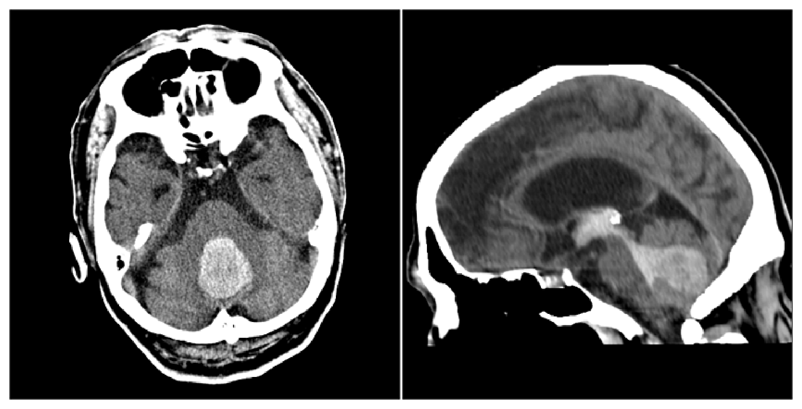
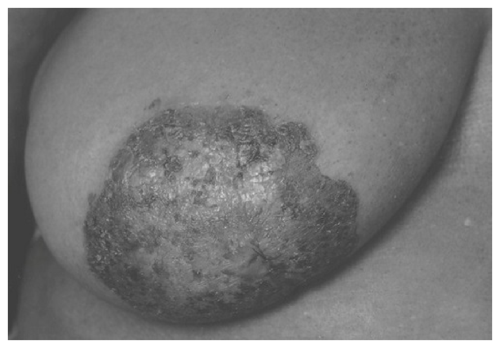
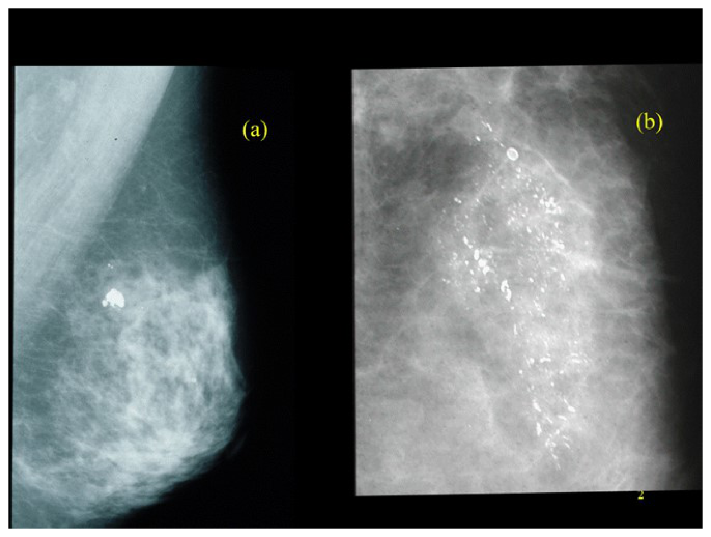
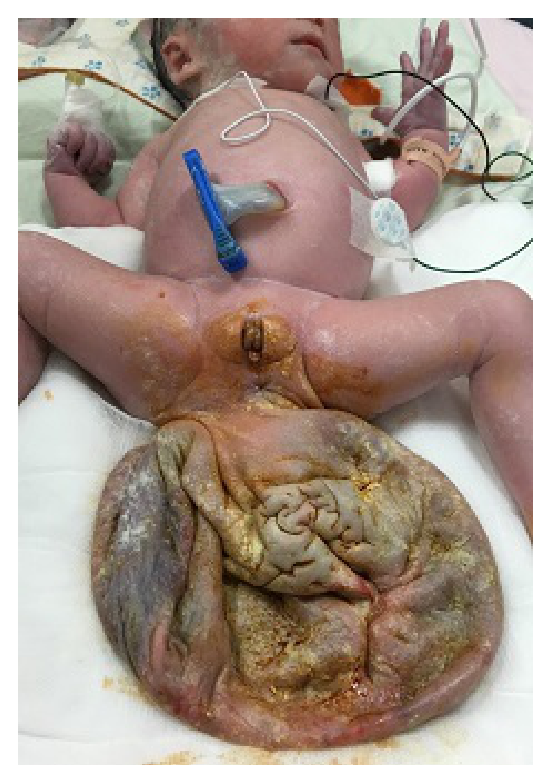
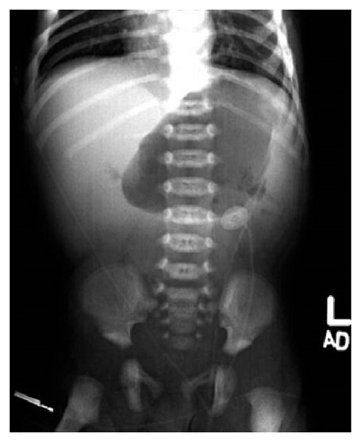
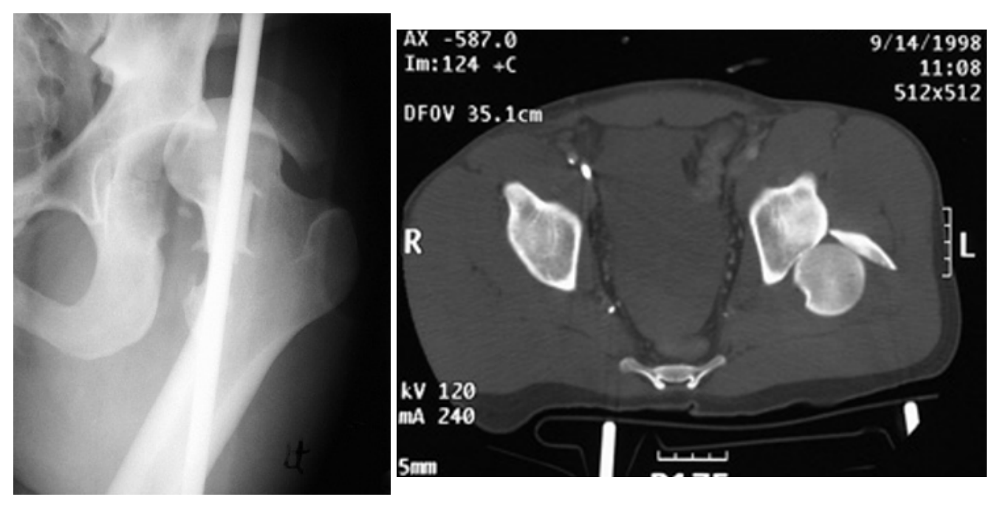
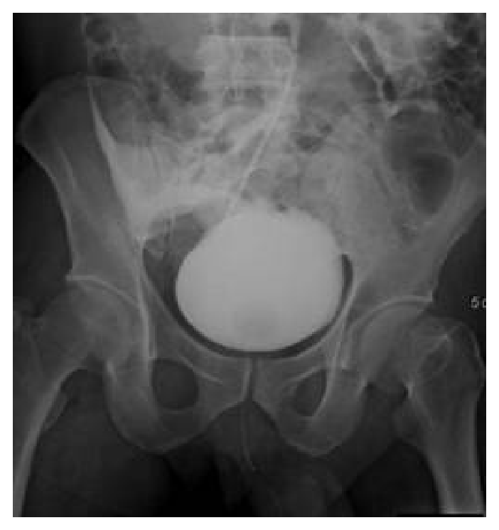

開卷有益 ／
醫師 ／ 醫學（五）（包括外科、骨科、泌尿科等科目及其相關臨床實例與醫學倫理） ／ 112 年第 1 次112 年第 1 次醫師醫學（五）（包括外科、骨科、泌尿科等科目及其相關臨床實例與醫學倫理）試題與答案
這一頁是民國 112 年第 1 次醫師醫學（五）（包括外科、骨科、泌尿科等科目及其相關臨床實例與醫學倫理）的整份歷屆試題，共 80 題，題目與標準答案出自考選部「國家考試試題及測驗式試題答案」開放資料，其中 80 題附有詳解。以下逐題列出題幹、選項與答案；要計時作答或記錄成績，請用線上練習。
考選部原始場次代碼：112020
線上作答這一科 →
全部 80 題
第 1 題
一位外傷病人被送到急診急救，若決定病人需要緊急輸血，但又不清楚病人的血型時，下列敘述何者最恰當？
（A） 可以輸O型的全血（B） 可以輸O型的紅血球（C） 可以輸O型的血漿（D） 不可以馬上輸血，應等到血型清楚以後再輸同血型的血品答案：（B）
詳解與考點 正解：外傷急救必須輸血但血型未知時，可緊急輸注 O 型紅血球，因其表面沒有 A、B 抗原，能降低 ABO 不相容風險，故選 B。仍須盡快完成血型鑑定與交叉試驗。
A：O 型全血的血漿可能含抗 A、抗 B 抗體，不能概括作為未知血型的最佳選項。
C：O 型血漿含抗 A、抗 B 抗體，可能攻擊受血者紅血球；血漿相容原則與紅血球不同。
D：出血性休克時等待血型結果會延誤復甦，應先用緊急相容血品。
本題考點：緊急輸血（emergency transfusion）；O 型紅血球（group O red blood cells）；ABO 相容性（ABO compatibility）須區分紅血球與血漿。
第 2 題
有關胸部外傷，下列敘述何者錯誤？
（A） 低部位肋骨骨折的病人（例如9th-12th ribs fracture）應考慮做腹部電腦斷層檢查，評估腹內是否有其他器官受傷（B） 小孩未發育完成，因此比起成年人，小孩的肋骨較容易因為鈍傷而造成骨折（C） 有氣胸的小孩與成年人做比較，小孩容易發展成張力性氣胸（D） 患者即使有少量的氣胸（氣胸量＜10%），若需要轉院時，仍應放置胸管答案：（B）
詳解與考點 正解：本題問錯誤敘述；小孩胸廓較有彈性，肋骨較不容易在鈍傷下骨折，反而要警覺無骨折仍可能有胸內傷，故選 B。
A：第 9 至 12 肋骨鄰近肝、脾與腎，低位肋骨骨折應評估合併腹內傷害。
C：小孩胸壁較柔順，氣胸未必早期呈現明顯症狀，須密切觀察張力性氣胸風險。
D：即使氣胸量少，轉送或正壓通氣時仍可能擴大；預先置胸管是安全考量。
本題考點：小兒胸部外傷（pediatric chest trauma）與胸廓順應性；低位肋骨骨折（lower rib fracture）和腹內傷害；氣胸（pneumothorax）轉送時的惡化風險。
第 3 題
病人接受胰頭十二指腸切除手術之後，需進行消化道之重建，最容易造成術後滲漏的吻合處為下列何者？
（A） 胃部空腸吻合（B） 膽管空腸吻合（C） 胰體空腸吻合（D） 各吻合處滲漏之機率沒有太大的差異答案：（C）
詳解與考點 正解：胰頭十二指腸切除後，胰臟質地軟、胰管細或胰液消化性強時，胰體空腸吻合最容易術後滲漏，故選 C。胰液滲漏可導致腹腔感染、出血等嚴重併發症。
A：胃空腸吻合可有其他問題，但不是最常見滲漏來源。
B：膽管空腸吻合也可能膽汁滲漏，然而一般仍以胰腸吻合的滲漏風險較高。
D：各吻合處滲漏風險不同，不能說沒有太大差異。
本題考點：胰頭十二指腸切除術（pancreaticoduodenectomy）；胰腸吻合（pancreaticojejunostomy）；術後胰液滲漏（postoperative pancreatic fistula）。
第 4 題
下列有關肝細胞癌的Barcelona Clinic Liver Cancer（BCLC）臨床分期和治療之相關敘述，何者錯誤？
（A） 臨床分期分成stage 0、A、B、C、D（B） 分期依據包括腫瘤大小、Child score及performance status等（C） chemoembolization為一種curative treatment（D） 對於BCLC stage C的晚期患者來說，可以考慮使用標靶藥物如sorafenib答案：（C）
詳解與考點 正解：本題問錯誤敘述；肝細胞癌的 chemoembolization 是局部腫瘤控制或橋接治療，不屬典型根治性治療，故選 C。根治性治療通常須能完整清除腫瘤，例如切除、消融或適當個案的移植。
A：BCLC 分期分為 0、A、B、C、D，敘述正確。
B：BCLC 綜合腫瘤負荷、肝功能如 Child score 與 performance status，敘述正確。
D：BCLC stage C 可考慮全身性治療，sorafenib 是其代表性標靶治療選項，敘述正確。
本題考點：Barcelona Clinic Liver Cancer（BCLC）分期；肝細胞癌（hepatocellular carcinoma）治療；經動脈化學栓塞（transarterial chemoembolization, TACE）主要為非根治性局部治療。
第 5 題
下列何者不是理想傷口敷料的特性？
（A） 防止微生物通透（B） 創造乾燥清爽環境（C） 提供機械性保護（D） 易於操作答案：（B）
詳解與考點 正解：理想傷口敷料應維持適度濕潤而非創造乾燥環境；濕潤環境有利細胞移行與再上皮化，故不是理想特性的是 B。
A：防止微生物通透可降低外來污染，是理想敷料的重要特性。
C：提供機械性保護可避免傷口受摩擦與外力破壞，敘述正確。
D：敷料應易於操作與更換，才能提升照護可行性，敘述正確。
本題考點：濕潤傷口癒合（moist wound healing）；理想傷口敷料（ideal wound dressing）的屏障與保護功能；再上皮化（re-epithelialization）需要適度濕潤環境。
第 6 題
下列何者為腎臟移植的絕對禁忌症？
（A） 開放性肺結核病的末期腎衰竭病人（B） 愛滋病帶原者接受定期治療，且病情穩定的末期腎衰竭病人（C） 年齡超過70歲的末期腎衰竭病人（D） 大腸癌接受治療後，超過五年無復發的末期腎衰竭病人答案：（A）
詳解與考點 正解：「絕對禁忌症」；移植後的免疫抑制會使未控制的活動性感染迅速惡化。開放性肺結核代表具傳染性且尚未控制的活動性結核，不能在此狀態下接受腎臟移植，故選 A。
B：接受規律治療且病毒狀態穩定的 HIV 感染者，經個別評估後可接受腎臟移植；它看似因免疫抑制而不適合，但穩定控制的感染並非一律排除。
C：高齡會提高手術與長期照護風險，卻不是單憑年齡就構成的絕對禁忌症；仍須衡量生理功能、共病與預期效益。
D：已接受治療且超過五年無復發的大腸癌，通常可在腫瘤復發風險評估後考慮移植；與活動性惡性腫瘤不同。
本題考點：腎臟移植（kidney transplantation）禁忌症——未控制的活動性感染會在免疫抑制下惡化；移植候選人評估（transplant candidate evaluation）須區分絕對禁忌症與可經治療、追蹤後個別評估的風險。
第 7 題
關於盲環症候群（blind loop syndrome）的病人，下列敘述何者最不恰當？
（A） 容易發生脂肪瀉（steatorrhea）（B） 應補充維他命B12（C） 腸胃道中細菌過度孳生所致（D） 容易發生小紅血球貧血（microcytic anemia）答案：（D）
詳解與考點 正解：盲環造成的細菌過度孳生，細菌會消耗維他命 B12，因而以 B12 缺乏與巨球性貧血較典型；「小紅血球貧血」最不恰當，故選 D。
A：細菌使膽鹽去結合，脂肪乳化與吸收受損，容易出現脂肪瀉（steatorrhea），敘述正確。
B：因維他命 B12 吸收受影響而需補充，屬合理處置。
C：腸道解剖性盲環使內容物滯留，促進小腸細菌過度孳生（small intestinal bacterial overgrowth），正是本症的核心機轉。
本題考點：盲環症候群（blind loop syndrome）——腸道滯留導致細菌過度孳生；脂肪吸收不良（fat malabsorption）與維他命 B12 缺乏可分別造成脂肪瀉與巨球性貧血（macrocytic anemia）。
第 8 題
腦部星狀細胞瘤（astrocytoma），WHO腫瘤分級：I～IV，下列相關之敘述何者正確？
（A） grade I與II屬低惡性度（B） grade III與IV屬高惡性，統稱glioblastoma multiforme（GBM）（C） 預後極差，在診斷後，grade I～IV median survival都不超過3年（D） 切除手術會造成神經損傷，故以化學治療及放射線治療為主答案：（A）
詳解與考點 正解：WHO I～IV 級的惡性度分層；grade I 與 grade II 屬較低惡性度的星狀細胞腫瘤，生長相對緩慢，故選 A。
B：grade III 為間變性星狀細胞瘤，grade IV 才是 glioblastoma；兩者皆屬高惡性度，但不能統稱為 glioblastoma multiforme（GBM）。
C：各級預後差異很大。低級別腫瘤的存活期可明顯超過三年，因此不能把 I～IV 級一概說成診斷後都不超過三年。
D：可安全切除時，手術除可減少腫瘤負荷，也能取得病理診斷；放射線與化學治療是依級別、位置與切除程度搭配，而非因手術必然造成神經損傷就一律不用。
本題考點：星狀細胞瘤（astrocytoma）分級——低級別腫瘤（low-grade glioma）包括 WHO grade I、II；高級別膠質瘤（high-grade glioma）包括 grade III、IV，其中 glioblastoma 為 grade IV。
第 9 題
一位68歲男性於早上被家人發現臥於床上叫不醒，枕頭與嘴邊有嘔吐物，送來急診時昏迷指數為E1V1M4，血壓196/103 mmHg，心跳72/min，電腦斷層檢查如圖，下列敘述何者正確？

（A） 病人來到急診時會以半側肢體無力表現（B） 為維持腦部血管灌流充足，不可以降血壓（C） 應為外傷造成的出血，應懷疑家人是否有謊報病史（D） 病人的高血壓、冠狀動脈心臟病病史與這次的出血有相關性答案：（D）
詳解與考點 正解：影像軸位與矢狀位可見後顱窩小腦內高密度出血，符合小腦出血（cerebellar hemorrhage）。大量小腦出血可壓迫第四腦室及腦幹而造成昏迷，並可引起嘔吐；本例嚴重高血壓是典型危險因子。長期高血壓造成穿通小動脈病變，也常與冠狀動脈心臟病共享動脈粥樣硬化等血管危險因子，故選 D。
A：半側肢體無力較常見於大腦半球或內囊病灶；大量小腦出血壓迫腦幹時的可能表現是突發深度昏迷、四肢癱瘓或姿勢異常、瞳孔縮小等腦幹徵象。雖然腦幹局部病灶可出現交叉性神經學缺損，但無法以單純半側肢體無力概括本例的主要表現。
B：急性腦出血時須審慎控制血壓，以減少血腫持續擴大；治療目標是在維持腦灌流與避免過高血壓造成再出血之間取得平衡，並非完全不可降血壓。
C：圖中出血位於小腦，合併到院時顯著高血壓，符合高血壓性腦內出血的常見位置與臨床情境。外傷性顱內出血較常見硬膜外、硬膜下或腦挫傷相關出血，不能僅因病人昏迷便推論為外傷或懷疑家屬謊報。
本題考點：高血壓性腦內出血（hypertensive intracerebral hemorrhage）常侵犯基底核、丘腦、小腦與橋腦等深部穿通動脈供應區；大量小腦出血（cerebellar hemorrhage）可因壓迫第四腦室及腦幹而快速昏迷；急性腦出血的血壓處置（blood pressure management）需審慎降壓以兼顧止血與腦灌流。
第 10 題
承上題，有關這位病人的治療處置，下列何者錯誤？
（A） 可能有合併阻塞性水腦症，需做腦室外引流（B） 僅需保守治療給與類固醇降低腦腫脹即可，不需要手術移除血塊（C） 若出血惡化，進一步擴大，可能會壓迫腦幹造成猝死（D） 此為常見自發性出血區域之一答案：（B）
詳解與考點 正解：官方答案為 B。自發性腦內出血不應以類固醇降低腦壓；是否需要手術則須依出血位置、血腫量、水腦症、腦幹壓迫與神經惡化判斷，因此「僅」給類固醇且不考慮進一步處置不正確。
A：腦內出血阻塞腦脊髓液循環時可造成阻塞性水腦症，神經狀態惡化者可考慮腦室外引流（external ventricular drainage）。
C：血腫擴大及顱內壓升高可造成腦疝脫與腦幹壓迫，確有猝死風險。
D：是否為常見自發性出血部位須依前題所示實際解剖位置判讀；高血壓性腦內出血常見於深部腦區。
本題考點：自發性腦內出血（spontaneous intracerebral hemorrhage）須評估血腫效應、水腦症與神經惡化；類固醇（corticosteroids）不適用於降低自發性腦內出血的腦壓。
第 11 題
關於腰椎退化性病變造成神經管狹窄，甚至造成椎體滑脫的敘述，下列何者最適當？
（A） 典型的症狀為長期嚴重的下背痛，無法走遠、騎腳踏車和久坐（B） 症狀會隨著病患站立和挺起腰椎（extension）而得到緩解（C） 如為第五腰椎pars interarticularis退化性斷裂，可能造成腰椎第4～5節滑脫併椎管狹窄（D） 可先以保守治療為主，如果症狀沒有改善，甚至神經症狀加劇，或有小便困難情形，則需住院手術治療答案：（D）
詳解與考點 正解：退化性椎管狹窄合併可能的神經壓迫；先採保守治療，若症狀持續、神經缺損惡化或有排尿困難等馬尾症候群警訊，應進一步手術減壓或穩定，故選 D。
A：椎管狹窄的神經性跛行通常在走路、久站與腰椎伸展時加重，彎腰、騎腳踏車或久坐反而較能緩解；此選項把典型誘發與緩解情境混淆。
B：腰椎伸展會使椎管更狹窄，常使症狀加重而非緩解；屈曲才較能增加椎管空間。
C：第五腰椎 pars interarticularis 缺損較符合峽部型滑脫，常見為 L5 相對 S1 滑脫；退化性滑脫則常在 L4～5，不能以此描述直接推成 L4～5 滑脫。
本題考點：腰椎椎管狹窄（lumbar spinal stenosis）——神經性跛行在伸展時惡化、屈曲時改善；馬尾症候群（cauda equina syndrome）的排尿障礙與進行性神經缺損是緊急處置警訊。
第 12 題
關於脊椎Jefferson fracture，下列敘述何者正確？
（A） 主要是第一頸椎受到前屈外力（flexion）所導致（B） 大部分會造成嚴重的神經功能損傷（C） 必須經頸椎核磁共振檢查才能診斷（D） 如合併韌帶斷裂，可造成第一、二頸椎不穩定脫位答案：（D）
詳解與考點 正解：Jefferson fracture 是第一頸椎（C1）爆裂性骨折；若伴隨橫韌帶受損，寰椎無法維持與樞椎的穩定關係，可造成 C1～C2 不穩定或脫位，故選 D。
A：典型受力是頭頂軸向負荷（axial loading），使 C1 側塊向外分離，不是以前屈外力為主。
B：C1 椎管相對寬，骨折碎片多向外移位，因此嚴重神經損傷並不常見；它看似位於高頸椎而危險，實際上神經學缺損並非典型表現。
C：開口位頸椎 X 光與電腦斷層可診斷骨折；MRI 主要用於評估韌帶與脊髓，並非診斷骨折唯一必需檢查。
本題考點：Jefferson fracture——第一頸椎爆裂骨折（C1 burst fracture）常由軸向負荷造成；寰椎橫韌帶（transverse atlantal ligament）完整性決定寰樞椎穩定度。
第 13 題
頭骨骨裂病患，下列何種情形須馬上手術？
（A） 顳骨骨折導致顏面神經麻痺（B） 前顱窩骨折導致腦脊髓液鼻漏（C） 顳骨骨折導致腦脊髓液鼻漏（D） 腦實質出血35 mL，造成電腦斷層中線偏移大於1 cm，合併神智改變答案：（D）
詳解與考點 正解：腦實質出血 35 mL、中線偏移超過 1 cm 且神智改變，表示明顯占位效應與腦疝脫風險，須緊急神經外科手術評估與減壓清除血腫，故選 D。
A：顳骨骨折相關的顏面神經麻痺須依發作時序、影像與電生理評估；不是所有病例都必須立刻手術。
B、C：前顱窩或顳骨骨折造成的腦脊髓液鼻漏多可先採保守處置與觀察，持續漏液、反覆感染或其他併發症才考慮修補；單有漏液不等同立即開刀指徵。
本題考點：顱腦外傷（traumatic brain injury）——腦內血腫（intracerebral hematoma）合併中線偏移與意識改變代表嚴重質量效應；腦脊髓液漏（cerebrospinal fluid leak）須追蹤持續性與感染併發症，未必立即手術。
第 14 題
有關先天性黑色素細胞痣（congenital melanocytic nevus, CMN）的敘述，下列何者正確？①20～49.9 cm為大型（large）CMN，＞50 cm為巨大（giant）CMN ②大型和巨大CMN發展成黑色素細胞瘤的機率比小型CMN還高 ③ 大型和巨大CMN患者有較高的機會在腦膜有黑色素細胞異常增生（leptomeningeal involvement），可藉由MRI作診斷 ④ 小型CMN如果發展出黑色素細胞瘤，多發生在青春期後
（A） 僅①③（B） 僅②④（C） 僅①②④（D） ①②③④答案：（D）
詳解與考點 正解：大型、巨大先天性黑色素細胞痣的分類、惡性風險與神經皮膚受累；①至④皆符合其臨床特徵，故選 D。20～49.9 cm 為大型，超過 50 cm 為巨大 CMN；大型或巨大病灶的黑色素瘤風險較小型高，並可能伴隨腦膜黑色素細胞異常增生，可用 MRI 評估；小型 CMN 的惡性變化較常在青春期後出現。
A：僅列①③，漏掉大型、巨大 CMN 較高的黑色素瘤風險（②）與小型 CMN 惡性變化的常見年齡特徵（④），不完整。
B：僅列②④，漏掉病灶大小分類（①）及 MRI 評估腦膜受累（③），不完整。
C：僅列①②④，漏掉大型、巨大 CMN 可伴隨 leptomeningeal involvement 且可用 MRI 評估的敘述（③），不完整。
本題考點：先天性黑色素細胞痣（congenital melanocytic nevus, CMN）——病灶大小與黑色素瘤（melanoma）風險相關；神經皮膚黑色素症（neurocutaneous melanosis）可見腦膜黑色素細胞異常增生，MRI 有助評估。
第 15 題
有關顯微組織皮瓣（microvascular free flaps），下列敘述何者錯誤？
（A） 肌肉可以忍受的熱缺血時間（warm ischemia time）為4～6小時（B） 不論是end-to-end或end-to-side的動脈接合方式，血液成功流通的機率其實差不多（C） 當兩條血管粗細不一樣時，end-to-side anastomoses是一個合適的解決方式（D） 為了預防皮瓣移植過程中發生vasospasm，可將血管的外膜（tunica adventitia）剝除以降低交感神經影響答案：（A）
詳解與考點 正解：顯微皮瓣對缺血時間的耐受性；肌肉代謝需求高，溫缺血耐受時間較短，不能把 4～6 小時視為可安全忍受，故錯誤的是 A。
B：動脈可採 end-to-end 或 end-to-side 接合；在血管條件、技術與血流規畫合宜時，兩者皆可達成可靠通暢，敘述合理，故非答案。
C：當供、受血管口徑不一，end-to-side anastomosis 可保留受體主幹並處理口徑差異，是可採用的策略，敘述正確，故非答案。
D：血管外膜含有與血管痙攣相關的交感神經纖維；在顯微血管接合時適度去除外膜可減少刺激與痙攣，敘述正確，故非答案。
本題考點：顯微組織皮瓣（microvascular free flap）——缺血再灌流傷害（ischemia-reperfusion injury）對肌肉尤重要；微血管吻合（microvascular anastomosis）可依口徑與受體血流選用 end-to-end 或 end-to-side。
第 16 題
下列手部掌內肌群（intrinsic muscles），何者不是由正中神經（median nerve）所支配？
（A） abductor pollicis brevis（B） adductor pollicis（C） flexor pollicis brevis（D） opponens pollicis答案：（B）
詳解與考點 正解：手掌拇指肌群的神經支配；adductor pollicis 屬尺神經深支支配，不是正中神經支配，故選 B。
A：abductor pollicis brevis 為魚際肌，通常由正中神經返支支配，故非答案。
C：flexor pollicis brevis 的淺頭通常由正中神經返支支配，是常見考法；其深頭可有尺神經支配的變異，但本題以標準魚際肌支配分類判斷，故非答案。
D：opponens pollicis 為魚際肌，由正中神經返支支配，故非答案。
本題考點：手部內在肌（intrinsic hand muscles）——正中神經返支（recurrent branch of median nerve）主要支配魚際肌；尺神經深支（deep branch of ulnar nerve）支配 adductor pollicis 與多數骨間肌。
第 17 題
關於唾液腺腫瘤（salivary gland tumor），下列敘述何者錯誤？
（A） 唾液腺腫瘤（salivary gland tumor）相對少見，在頭頸部癌總數占＜2%（B） 大多數唾液腺腫瘤（salivary gland tumor）發生在腮腺（parotid gland），其中以多形性腺瘤（pleomorphicadenomas）為最常見之良性腫瘤（C） 腺樣囊狀癌（adenoid cystic carcinoma）病理切片下若為tubular pattern則預後較差（D） 黏液表皮樣癌（mucoepidermoid carcinoma）為最常見之唾液腺惡性腫瘤，high grade多為epidermoid type；low grade多為mucinous type答案：（C）
詳解與考點 正解：腺樣囊狀癌的組織型態與預後；tubular pattern 的分化較佳、預後相對較好，預後較差的是較高比例的 solid pattern，因此 C 錯誤。
A：唾液腺腫瘤在頭頸部癌中所占比例低，屬相對少見腫瘤，敘述正確，故非答案。
B：唾液腺腫瘤多發生於腮腺，而多形性腺瘤是最常見的良性唾液腺腫瘤，敘述正確，故非答案。
D：黏液表皮樣癌是常見的唾液腺惡性腫瘤；高級別腫瘤較偏 epidermoid 細胞成分，低級別較偏 mucinous 細胞成分，敘述合理，故非答案。
本題考點：腺樣囊狀癌（adenoid cystic carcinoma）——組織型態（histologic pattern）具預後意義，tubular 型相對較佳、solid 型較差；唾液腺腫瘤（salivary gland tumor）以腮腺及多形性腺瘤為常見考點。
第 18 題
照片顯示之乳房病灶，最有可能為下列何種疾病？

（A） Mondor's disease（B） Paget's disease（C） duct ectasia（D） acute mastitis答案：（B）
詳解與考點 正解：圖中乳頭與乳暈呈濕疹樣、鱗屑結痂及糜爛性變化，病灶以乳頭乳暈為中心，最符合乳房 Paget 氏病（Paget's disease）。此病為乳管癌細胞延伸至乳頭表皮所致，常表現為單側持續性乳頭濕疹樣病灶，不能只當作一般皮膚炎處理，故選 B。
A：Mondor 氏病（Mondor's disease）是乳房表淺靜脈血栓性靜脈炎，典型表現為乳房皮膚下可觸及疼痛、條索狀硬結或凹陷的血管走向改變；圖示主要是乳頭乳暈的鱗屑糜爛病灶，沒有條索狀靜脈病灶的外觀。
C：乳管擴張症（duct ectasia）多見於乳管擴張與乳管周圍發炎，可有乳頭分泌物、乳頭凹陷或乳暈下腫塊；雖可能合併局部發炎，但並非以圖中這種持續性、濕疹樣乳頭表皮破壞為典型表現。
D：急性乳腺炎（acute mastitis）通常造成乳房局部疼痛、紅、腫、熱與壓痛，常伴隨感染相關的全身症狀；圖中病變集中於乳頭乳暈的鱗屑結痂與糜爛，缺乏瀰漫性急性乳房發炎的典型外觀。
本題考點：乳房 Paget 氏病（Paget's disease）是乳頭乳暈持續性濕疹樣、鱗屑或糜爛病灶的重要惡性鑑別診斷；乳管癌（ductal carcinoma）可沿乳管侵犯乳頭表皮；須與乳管擴張症（duct ectasia）、急性乳腺炎（acute mastitis）及表淺靜脈血栓性靜脈炎（Mondor's disease）依病灶外觀與臨床表現區分。
第 19 題
關於心臟手術中使用的體外循環（cardiopulmonary bypass），下列敘述何者錯誤？
（A） 常見的動脈管路置放位置包含升主動脈、無名動脈、腋動脈或股動脈（B） 當體溫下降至20℃時，體外循環機需提供至少2.4 L/min/m2的流量（C） 可能產生的負面影響包含全身性發炎反應、栓塞、凝血路徑影響、周邊器官功能不足（end-organdysfunction）等（D） 當心臟停跳，血液循環完全依靠體外循環時，呼吸器即可完全暫停答案：（B）
詳解與考點 正解：低溫時的體外循環灌流需求；降溫會降低代謝率，所需幫浦流量應隨之調降，不是在 20℃ 仍一律維持至少 2.4 L/min/m2，故 B 錯誤。
A：體外循環的動脈插管可依手術與血管病變選升主動脈、無名動脈、腋動脈或股動脈，敘述正確，故非答案。
C：體外循環可引發全身性發炎反應、栓塞、凝血異常與末端器官功能障礙，均為重要併發症，敘述正確，故非答案。
D：全心肺繞道時由氧合器負責氣體交換，機械通氣可暫停；它看似忽略肺臟，但氧合與二氧化碳移除已轉由體外循環處理，故非答案。
本題考點：體外循環（cardiopulmonary bypass）——溫度管理（temperature management）會改變代謝與灌流需求；體外氧合器（oxygenator）在全心肺繞道期間暫代肺臟的氣體交換功能。
第 20 題
在一些下肢深層靜脈栓塞（deep venous thrombosis, DVT）的病人，須放置下腔靜脈過濾器（IVC filter），但下列何者不需要？
（A） 慢性下腔靜脈完全阻塞（B） 有絕對禁忌症無法使用抗凝血劑（C） 在足夠的抗凝血劑劑量下仍復發DVT（D） 慢性肺栓塞合併肺高壓答案：（A）
詳解與考點 正解：IVC filter 的目的在攔截下肢或骨盆靜脈栓子，避免進入肺循環；慢性下腔靜脈已完全阻塞時，過濾器無法提供有意義的額外攔截效益，故是不需要放置的 A。
B：急性靜脈血栓栓塞症若有抗凝血絕對禁忌症，無法以標準抗凝血治療，可能需考慮 IVC filter，故非答案。
C：在足夠抗凝血下仍反覆發生血栓栓塞，應重新檢視診斷與治療，但可列為考慮過濾器的情境，故非答案。
D：慢性肺栓塞合併肺高壓時，避免再次栓塞尤其重要；在特定病人可考慮過濾器，故非答案。
本題考點：下腔靜脈過濾器（inferior vena cava filter）——主要用於無法抗凝血或抗凝血失敗而有肺栓塞風險者；靜脈血栓栓塞症（venous thromboembolism）仍以抗凝血為基本治療。
第 21 題
下肢動脈阻塞疾病的Fontaine分類，下列何者正確？
（A） 組織喪失（tissue loss）為stage I（B） 壞死（gangrene）為stage II（C） ischemic rest pain為stage III（D） claudication為stage IV答案：（C）
詳解與考點 正解：Fontaine 分類的缺血嚴重度順序：stage I 無症狀、stage II 間歇性跛行、stage III 缺血性休息痛、stage IV 潰瘍或壞疽。因此 ischemic rest pain 為 stage III，故選 C。
A：組織喪失包括潰瘍或壞疽，屬 stage IV，不是 stage I。
B：壞疽亦屬 stage IV，不是 stage II；stage II 的表現是間歇性跛行。
D：claudication 為 stage II，不是 stage IV；這是最常見的分期對調誘答。
本題考點：Fontaine 分類（Fontaine classification）——周邊動脈疾病（peripheral arterial disease）依症狀分為無症狀、間歇性跛行、缺血性休息痛與組織缺損四階段。
第 22 題
馬凡氏症（Marfan syndrome）是因體內何蛋白質異常造成？
（A） elastin（B） metalloproteinase（C） collagen（D） fibrillin答案：（D）
詳解與考點 正解：馬凡氏症的結締組織基因缺陷；其主要異常為 fibrillin-1，影響微纖維結構與 TGF-β 訊號調控，故選 D。
A：elastin 是彈性纖維的重要成分，但不是馬凡氏症的主要異常蛋白。
B：metalloproteinase 參與細胞外基質重塑，並非本症的致病蛋白；它看似與主動脈壁退化有關，但不等於遺傳病的根本缺陷。
C：collagen 異常與多種結締組織疾病有關，例如部分 Ehlers-Danlos syndrome，但不是馬凡氏症的典型分子缺陷。
本題考點：馬凡氏症（Marfan syndrome）——fibrillin-1（FBN1）異常造成結締組織脆弱；主動脈根部病變（aortic root disease）與骨骼、眼部表現是重要臨床關聯。
第 23 題
有關全肺靜脈異常（total anomalous pulmonary venous connection, TAPVC）之敘述，何者錯誤？
（A） 手術治療infracardiac type與supracardiac type TAPVC時，建議保留垂直靜脈（vertical vein），不截紥或不截斷（B） 不論是否有阻塞之單純TAPVC，應建議手術矯正（C） 無縫之修復法（sutureless repair）適合用於全肺靜脈異常術後再狹窄之病患（D） 心導管（cardiac catheterization）之檢查已經是非必要之檢查答案：（A）
詳解與考點 正解：TAPVC 矯正術後必須建立無阻力的肺靜脈回流；垂直靜脈是否保留須依血流動力學與型別個別決定，不能對 infracardiac 與 supracardiac type 一概建議不截紥或不截斷，故 A 錯誤。
B：單純 TAPVC 即使尚無明顯阻塞，仍需手術建立肺靜脈至左心房的正常回流，敘述正確，故非答案。
C：無縫修復法（sutureless repair）可用於術後肺靜脈再狹窄，目標是減少對脆弱肺靜脈壁的直接縫合，敘述正確，故非答案。
D：現今多可由心臟超音波及其他非侵入性影像完成解剖與血流評估，心導管檢查通常不是常規必需項目，敘述正確，故非答案。
本題考點：全肺靜脈異常回流（total anomalous pulmonary venous connection, TAPVC）——根治治療是外科建立肺靜脈回流至左心房；肺靜脈阻塞（pulmonary venous obstruction）與術後再狹窄是重要風險。
第 24 題
最常合併主動脈脫垂或逆流的心室中隔缺損為下列何者？
（A） 小的（＜3 mm）perimembranous type（type II）（B） 大的（＞5 mm）perimembranous type（type II）（C） subarterial type（type I）（D） muscular type答案：（C）
詳解與考點 正解：缺損位置與主動脈瓣的解剖關係；subarterial type VSD 位於主動脈瓣下方，血流可牽拉瓣葉造成主動脈瓣脫垂與逆流，因此最常合併此問題，故選 C。
A：小型 perimembranous VSD 雖鄰近主動脈瓣，但並非最典型造成瓣葉脫垂與逆流的型別。
B：缺損大不等於最容易造成主動脈瓣脫垂；關鍵是缺損與瓣葉支持結構的相對位置，而非單看直徑。
D：muscular type 位於肌性心室中隔，距主動脈瓣較遠，較不會造成主動脈瓣脫垂或逆流。
本題考點：心室中隔缺損（ventricular septal defect, VSD）——subarterial type 位於主動脈瓣下，易合併主動脈瓣脫垂（aortic valve prolapse）與主動脈逆流（aortic regurgitation）。
第 25 題
關於胃食道逆流（gastroesophageal reflux disease, GERD），下列敘述何者正確？
（A） 微創內視鏡手術進步，傷害小，因此胃食道逆流以手術為最優先最佳之選擇（B） 胃食道逆流也可能會使病人產生氣喘症狀（C） heartburn常見於心肌梗塞病人，很少發生在胃食道逆流病人身上（D） 胃食道逆流與食道弛緩症（achalasia）一樣，發生時間長久後，會有巨大食道（megaesophagus）產生答案：（B）
詳解與考點 正解：GERD 可有食道外表現；胃酸逆流可經微量吸入或反射機轉誘發咳嗽、喘鳴與類氣喘症狀，因此 B 正確。
A：手術可用於特定病人，例如藥物控制不佳或希望避免長期藥物者，但不是因微創傷口較小就成為所有 GERD 的最優先治療。
C：heartburn 是 GERD 的典型症狀；心肌梗塞可有非典型胸部不適，但不能把 heartburn 說成常見於心肌梗塞且少見於 GERD。
D：megaesophagus 是食道弛緩症長期食道排空障礙的典型結果；GERD 的主要問題是逆流，不會以巨大食道作為典型自然病程。
本題考點：胃食道逆流疾病（gastroesophageal reflux disease, GERD）——除 heartburn、regurgitation 外，也可有咳嗽與氣喘樣症狀等食道外表現（extraesophageal manifestations）；抗逆流手術（antireflux surgery）須依個別適應症選擇。
第 26 題
關於食道癌之敘述，下列何者錯誤？
（A） 胃食道鏡切片為確認食道癌診斷之工具（B） 使用鋇劑食道攝影檢查時，發現有鳥嘴徵象（bird's beak sign），為食道癌之診斷標準（C） 對於早期食道癌，胃食道鏡黏膜切除（endoscopic mucosal resection, EMR），除了可以獲得標本外，也可知腫瘤侵犯深度（D） 即使被鋇劑食道攝影診斷為食道蠕動問題，只要病人有吞嚥困難問題，仍應安排胃食道鏡檢查答案：（B）
詳解與考點 正解：bird's beak sign 的疾病意義；該徵象反映遠端食道平滑收縮與食道弛緩症，不能作為食道癌的診斷標準，故 B 錯誤。
A：胃食道鏡可直接觀察病灶並取得切片，是確認食道癌病理診斷的重要工具，敘述正確，故非答案。
C：早期食道癌可用 EMR 切除表淺病灶並取得完整標本，以評估侵犯深度與其他病理特徵，敘述正確，故非答案。
D：吞嚥困難是警訊症狀；即使鋇劑攝影看似蠕動問題，仍須胃食道鏡排除腫瘤或其他結構性病灶，敘述正確，故非答案。
本題考點：食道癌（esophageal cancer）診斷——內視鏡切片（endoscopic biopsy）提供病理確診；鳥嘴徵象（bird's beak sign）典型指向食道弛緩症（achalasia），吞嚥困難仍需排除惡性病灶。
第 27 題
關於肺腺癌（adenocarcinoma）之敘述，下列何者錯誤？
（A） 是肺癌中最常見的組織型態（histologic type）（B） 好發於支氣管上皮（bronchial epithelium）的mucus-producing cells（C） 大多位在周邊（peripherally located）（D） 與肺鱗狀上皮細胞癌（squamous cell carcinoma）相比，較不易轉移至腦部答案：（D）
詳解與考點 正解：肺腺癌的轉移傾向；肺腺癌常為周邊型，且可發生腦部轉移，不能說比鱗狀細胞癌更不易轉移至腦部，因此 D 錯誤。
A：肺腺癌是肺癌最常見的組織型態之一，整體而言為最常見型別，敘述正確，故非答案。
B：肺腺癌源自具有腺體分化特徵的肺上皮細胞，與黏液分泌細胞特徵相關，敘述正確，故非答案。
C：肺腺癌多為周邊型病灶；這點常與較中央型的鱗狀細胞癌對照，敘述正確，故非答案。
本題考點：肺腺癌（lung adenocarcinoma）——常見於肺周邊（peripheral lung），可具黏液分泌與腺體分化；肺癌腦轉移（brain metastasis）是臨床分期與症狀評估的重要部位。
第 28 題
有關類癌（carcinoid）之敘述，下列何者錯誤？
（A） 典型類癌（typical carcinoid）預後最佳（B） 類癌症後群（carcinoid syndrome）於典型類癌（typical carcinoid）很常見（C） 非典型類癌（atypical carcinoid）可能產生遠端轉移（D） 治療方式以手術切除為主答案：（B）
詳解與考點 正解：「何者錯誤」與典型肺類癌的臨床表現。典型類癌多為低度惡性、預後佳的肺神經內分泌腫瘤；類癌症候群通常需分泌物質進入體循環才明顯，在肺部典型類癌並不常見，故錯誤的是 B。
A：典型類癌的分化較佳、增殖活性較低，整體預後優於非典型類癌，敘述正確，故不是答案。
C：非典型類癌的惡性度較高，可出現淋巴結或遠端轉移；這正是它與典型類癌的重要差異，故敘述正確。
D：可切除的肺類癌以完整手術切除為主要治療，並盡量保留肺實質，敘述正確。
本題考點：肺類癌（pulmonary carcinoid）分為典型與非典型類癌；類癌症候群（carcinoid syndrome）源自具活性的分泌物進入體循環，肺部典型類癌並非其常見表現；手術切除（surgical resection）是局限性病灶的主要治療。
第 29 題
有關肺臟外傷之外科介入，下列敘述何者正確？
（A） 為了止血進行肺部穿刺傷縫合時，術中或術後可能會發生空氣栓塞甚至死亡（B） 肺臟外傷病患行pneumonectomy可增加存活率（C） pulmonary tractotomy無法提供有效的止血，所以建議直接行pneumonectomy（D） 為了有效控制出血，pneumonectomy為最常用的術式答案：（A）
詳解與考點 正解：肺穿刺傷的止血處置及其嚴重併發症。縫合受傷肺實質時，若空氣進入受損的肺靜脈，可能造成空氣栓塞並導致循環崩潰，故 A 正確。
B：肺切除術（pneumonectomy）會大幅減少肺血管床與呼吸儲備，在創傷情境的死亡風險很高；它是救命性、不得已的選擇，不能說可增加存活率。
C：肺道切開術（pulmonary tractotomy）可打開穿通傷的傷道，直接結紮或縫合出血血管與支氣管，是兼顧止血及保留肺實質的有效方法；它看似不如整肺切除徹底，實際上正用於避免不必要的大範圍切除。
D：肺外傷多優先採肺實質保留術式，例如縫合、楔狀切除或 pulmonary tractotomy；pneumonectomy 並非最常用術式。
本題考點：肺外傷手術（operative management of pulmonary trauma）以控制出血與漏氣、保留肺實質為原則；空氣栓塞（air embolism）是肺靜脈受傷時的致命併發症；肺道切開術（pulmonary tractotomy）適用於選定的穿通性肺傷。
第 30 題
有關成人縱隔腔腫瘤，下列敘述何者錯誤？
（A） benign teratoma若無法完全切除，只進行部分切除以緩解症狀，也鮮少復發（B） 後縱隔腫瘤常為neurogenic tumor（C） 化學治療及放射治療通常對seminoma效果良好（D） 縱隔惡性生殖細胞瘤的發生率沒有性別差異答案：（D）
詳解與考點 正解：成人縱隔惡性生殖細胞瘤的流行病學。此類腫瘤，尤其非精原細胞型病灶，明顯較常見於男性，不能說沒有性別差異，故 D 錯誤。
A：良性畸胎瘤以完整切除為理想目標；若因沾黏或重要結構侵犯而無法完全切除，部分切除可緩解壓迫症狀，良性病灶的復發風險仍相對低，敘述可成立。
B：後縱隔最常見的腫瘤類別是神經源性腫瘤（neurogenic tumor），與其解剖位置相符，敘述正確。
C：縱隔精原細胞瘤（seminoma）對放射治療與化學治療均具良好反應，敘述正確。
本題考點：縱隔腔腫瘤（mediastinal tumors）依前、中、後縱隔位置鑑別；後縱隔腫瘤常為神經源性腫瘤（neurogenic tumor）；縱隔生殖細胞瘤（mediastinal germ cell tumor）具有性別分布差異。
第 31 題
肝臟移植被認為是治療肝硬化合併肝細胞癌（hepatocellular carcinoma）病患的有效治療方法，下列肝細胞癌患者的腫瘤狀態何者較不建議接受肝臟移植治療？﹝Child-Turcotte-Pugh score簡稱CTP score﹞
（A） 50歲男性，B型肝炎患者，CTP score=8，兩顆腫瘤2.0 cm與2.5 cm分別位於segment III和segment VII，無肝外轉移及大血管侵犯（B） 60歲女性，C型肝炎患者，CTP score=10，單顆腫瘤4.5 cm位於segment VIII，無肝外轉移及大血管侵犯（C） 58歲男性，C型肝炎患者，CTP score=7，三顆腫瘤1.0 cm、2.0 cm與1.0cm分別位於segment II、segment V和segment VII，無肝外轉移及大血管侵犯（D） 40歲男性，B型肝炎患者，CTP score=5，單顆腫瘤2.0 cm位於segment II，無肝外轉移及大血管侵犯答案：（D）
詳解與考點 正解：「較不建議」肝移植，而非單純判斷是否符合腫瘤大小條件。A、B、C 的肝功能較差，腫瘤負荷也在常用移植篩選範圍內；D 雖為單顆 2.0 cm、無肝外轉移及大血管侵犯，但 CTP score 5 代表肝功能代償良好，較可能優先考慮肝切除或局部治療，故相對較不建議直接肝移植。
A：兩顆腫瘤均未超過 3 cm，且 CTP score 8、無肝外轉移及大血管侵犯，屬可考慮移植的情境。
B：單顆腫瘤 4.5 cm 未超過 5 cm，CTP score 10 顯示肝功能受損較明顯；這正是移植相對有利的組合。
C：三顆腫瘤皆未超過 3 cm，且無肝外轉移及大血管侵犯，腫瘤負荷仍在常用選擇標準內，故可考慮移植。
本題考點：肝細胞癌肝移植（liver transplantation for hepatocellular carcinoma）須同時評估腫瘤負荷、肝外轉移與大血管侵犯；Milan criteria 是常用的腫瘤篩選概念；Child-Turcotte-Pugh score 反映肝功能代償程度並影響治療選擇。
第 32 題
關於轉移性肝臟惡性腫瘤（metastatic liver tumor），下列敘述何者錯誤？
（A） 最常見的轉移性肝臟腫瘤來自大腸直腸癌（colorectal cancer）（B） 近50%～60%的大腸直腸癌（colorectal cancer）患者包括新診斷或術後追蹤，在其一生中會出現肝臟轉移（C） 基於化學藥物治療的發展及肝臟手術的精進，肝臟切除腫瘤已經成為治療大腸直腸癌肝臟轉移的標準治療（D） 多發性的大腸直腸癌肝臟轉移，既使接受手術治療預後也不好，只能以化學藥物治療答案：（D）
詳解與考點 正解：大腸直腸癌肝轉移並非只要多發便一律不能手術。可切除性取決於能否完整清除病灶、保留足夠功能性肝臟及病人的整體狀況；多發病灶經適當規劃、分期手術或合併全身治療後仍可能接受切除，因此 D 的「只能」化學治療錯誤。
A：大腸直腸癌是肝臟轉移瘤最常見的原發癌之一，也是臨床最重要的可切除肝轉移來源，敘述正確。
B：大腸直腸癌患者在病程中出現肝轉移的比例很高，選項所述約半數至六成是常用的流行病學概念，敘述正確。
C：對可切除的大腸直腸癌肝轉移，肝切除是具根治可能性的標準局部治療；化學治療的進展也使原先邊緣可切除者有機會轉為可切除，敘述正確。
本題考點：大腸直腸癌肝轉移（colorectal liver metastasis）的可切除性評估；肝轉移切除術（hepatic metastasectomy）可提供長期存活機會；轉換治療（conversion therapy）可讓部分原先不可切除病灶進入局部治療。
第 33 題
胰臟移植（pancreas transplantation）可以重建胰島素（insulin）的血糖代謝且可以改善糖尿病患者的生活品質，下列何種類別的胰臟移植相較其他類別，移植比例最高而且移植後病患整體預後也最好？
（A） 糖尿病患者合併腎衰竭尿毒症同時接受胰臟及腎臟移植（simultaneous pancreas and kidney transplant, SPK）（B） 糖尿病患者合併腎衰竭尿毒症接受過腎臟移植之後再接受胰臟移植（pancreas after kidney transplant, PAK）治療糖尿病（C） 糖尿病患者未合併尿毒症，但血糖不易控制接受胰臟移植（pancreas transplant alone, PTA）改善生活品質（D） 糖尿病患者合併腎衰竭尿毒症先接受胰臟移植（pancreas before kidney transplant, PBK）之後再等待腎臟移植答案：（A）
詳解與考點 正解：胰臟移植類別中「比例最高且整體預後最好」。糖尿病合併末期腎病的病人同時接受胰臟及腎臟移植（SPK），可在同一次移植中處理兩種器官衰竭，臨床施行比例最高，整體病人預後亦最佳，故選 A。
B：胰臟後腎臟移植（PAK）適用於已先獲得腎移植者，但需經歷兩次移植與兩次手術，整體結果通常不及 SPK。
C：單獨胰臟移植（PTA）多保留給嚴重、難控制糖尿病而尚無腎衰竭者；因需承擔免疫抑制風險，適用族群較小，移植比例較低。
D：先胰臟後腎臟移植（PBK）不是主要常規分類；對已合併尿毒症者，等待日後腎移植無法同時改善其腎衰竭，故不如 SPK 合理。
本題考點：同時胰腎移植（simultaneous pancreas and kidney transplant, SPK）是糖尿病合併末期腎病的重要治療；胰臟後腎臟移植（pancreas after kidney transplant, PAK）與單獨胰臟移植（pancreas transplant alone, PTA）各有不同適應症。
第 34 題
下列對於胰臟內分泌瘤的敘述何者錯誤?
（A） insulinoma是最常見的胰臟內分泌瘤，其主要症狀為Whipple triad，包含symptomatic fasting hypoglycemia,serum glucose level < 50 mg/dL, relief of symptoms with the administration of glucose（B） 70-90% insulinoma發生於Passaro's triangle，此區的範圍是由junction of the cystic duct and common bile duct, the2nd and 3rd portion of the duodenum和the neck and body of the pancreas組成的三角區域（C） Zollinger-Ellison syndrome是由gastrinoma所引起，主要症狀為abdominal pain, peptic ulcer disease和severeesophagitis（D） 90%的insulinoma是sporadic，而10% 的insulinoma與multiple endocrine neoplasia type I（MEN I）syndrome相關答案：（B）
詳解與考點 正解：insulinoma 的常見位置。insulinoma 多位於胰臟內，且多為散發性；Passaro's triangle 則是 gastrinoma 常見的解剖區域，不是 insulinoma 的典型分布，故 B 錯誤。
A：insulinoma 是最常見的功能性胰臟神經內分泌瘤，Whipple triad 的核心是低血糖症狀、低血糖時測得血糖下降，以及補充葡萄糖後症狀改善，敘述正確。
C：gastrinoma 過度分泌胃泌素，造成 Zollinger-Ellison syndrome，可表現為腹痛、難治性消化性潰瘍及嚴重食道炎，敘述正確。
D：多數 insulinoma 為散發性，少數與 MEN1 相關；此選項的比例概念正確。
本題考點：胰臟神經內分泌瘤（pancreatic neuroendocrine tumors）包括 insulinoma 與 gastrinoma；Whipple triad 用於辨識症狀性低血糖；Passaro's triangle 是 gastrinoma 的常見位置而非 insulinoma。
第 35 題
有關小腸瘻管（intestinal fistula）的敘述，下列何者正確？
（A） 大部分的腸皮膚瘻管（enterocutaneous fistula）是因為醫療過程造成的，且通常在術後2個星期發生（B） 影響自發性閉合的因素有營養不良、癌症、瘻管遠端阻塞、瘻管管道過長（＞2 cm）、滲出量過高、瘻管管道上皮化等（C） 奧曲肽（octreotide）對於滲出量過高的小腸瘻管有輔助作用，可以減少住院時間、瘻管閉合時間以及瘻管閉合率（D） 大部分外科醫師在考慮瘻管手術前先採保守治療2～3個月，因大部分可自發性閉合的瘻管在5個星期內會閉合，且先保守治療之後手術的成功率較高，併發症較少答案：（D）
詳解與考點 正解：腸皮膚瘻管先控制感染、補足液體與營養、處理瘻管輸出，待局部發炎與沾黏消退後再評估手術；可自發閉合者多在早期閉合，保守治療約 2～3 個月後再評估手術，故 D 正確。
A：多數腸皮膚瘻管確為醫源性，但術後瘻管不以 2 個星期為典型發生時序。
B：營養不良、惡性腫瘤、遠端阻塞、高輸出與上皮化皆不利自發閉合；較長的瘻管管道通常反而有利閉合。
C：降低瘻管閉合率本身不是治療效益。octreotide 可減少部分高輸出瘻管的輸出量，但是否縮短閉合時間或提高閉合率的證據不一致。
本題考點：腸皮膚瘻管（enterocutaneous fistula）處置重視感染控制、液體電解質與營養支持；自發閉合（spontaneous closure）受遠端阻塞、高輸出與上皮化影響；擇期瘻管修補（elective fistula repair）應在病人與局部狀態最佳化後進行。
第 36 題
有關膽道惡性腫瘤的敘述，下列何者最恰當？
（A） 膽囊癌主要發生在男性且絕大部分都有膽結石（B） 膽囊癌若沒有穿透肌肉層（T1），除了單純膽囊切除外，最好也要清除淋巴結（C） 遠端膽管癌預後平均比肝門膽管癌（Klatskin tumor）差（D） 膽管癌儘管手術進步也變得積極，但預後仍不佳答案：（D）
詳解與考點 正解：膽管癌即使接受積極手術，整體預後仍受晚期診斷、局部侵犯與復發風險限制；可切除時手術仍是唯一具根治可能的治療，故 D 最恰當。
A：膽囊癌較常見於女性，不是主要發生在男性；膽結石則是常見相關因子，不能據此支持此選項的性別敘述。
B：T1a 膽囊癌通常單純膽囊切除即可；T1b 則須考量再切除與區域淋巴結清除，因此把所有 T1 一概視為同一處置並不恰當。
C：遠端膽管癌通常較肝門膽管癌更容易達成根治性切除，預後一般不比肝門膽管癌差。
本題考點：膽道惡性腫瘤（biliary tract malignancy）包含膽囊癌與膽管癌；T1 膽囊癌須區分 T1a 與 T1b；根治性切除（curative resection）是可切除膽管癌的主要治療。
第 37 題
蔡先生50歲，二十幾年前曾因胃潰瘍穿孔接受部分胃切除及胃空腸吻合手術（Billroth II），昨日午餐後上腹痛約3小時後吐出約500 mL苦苦的液體腹痛隨即改善，晚餐時再次感到腹部悶痛但沒有嘔吐，夜裡因腹痛加劇至急診室就醫，血液檢查發現血中澱粉酶上升，下列何者為最可能的診斷？
（A） 胃潰瘍穿孔（perforated gastric ulcer）（B） 傾倒症候群（dumping syndrome）（C） 輸入環症候群（afferent loop syndrome）（D） 急性闌尾炎（acute appendicitis）答案：（C）
詳解與考點 正解：Billroth II 術後、餐後上腹痛、嘔出大量膽汁性液體後疼痛緩解，並合併澱粉酶上升。這是輸入環阻塞使膽汁、胰液在輸入環累積，壓力升高後突然嘔出而緩解的典型表現，故診斷為 C 輸入環症候群。
A：胃潰瘍穿孔常造成持續性劇烈腹痛與腹膜炎，不會以吐出大量膽汁性液體後明顯緩解作為典型表現。
B：傾倒症候群常在餐後出現心悸、出汗、腹部不適或腹瀉，源於胃內容物快速進入小腸，無法解釋膽汁性嘔吐與澱粉酶上升。
D：急性闌尾炎多為右下腹疼痛的演變，與既往 Billroth II 手術後的膽汁性嘔吐機轉不符。
本題考點：輸入環症候群（afferent loop syndrome）是 Billroth II 後的機械性併發症；膽汁性嘔吐（bilious vomiting）與疼痛暫時緩解提示輸入環減壓；胰膽分泌物鬱積可造成血中澱粉酶上升。
第 38 題
胃部的各種細胞中，下列何者粒線體（mitochondria）含量最高？
（A） chief cell（B） parietal cell（C） argentaffin cell（D） mucous cell答案：（B）
詳解與考點 正解：胃壁細胞需主動分泌大量氫離子。parietal cell 以 H+/K+-ATPase 將氫離子送入胃腔形成胃酸，此過程耗能極高，因此含有最豐富的粒線體，故選 B。
A：chief cell 主要分泌 pepsinogen 與胃脂肪酶，具發達的蛋白質分泌構造，但其耗能型主動運輸不及壁細胞。
C：argentaffin cell 為腸內分泌細胞，分泌生物胺或胜肽訊號；它看似也是分泌細胞，但不需如壁細胞般持續以質子幫浦建立強大酸性梯度。
D：mucous cell 主要分泌黏液與碳酸氫鹽以保護胃黏膜，並非大量主動分泌氫離子的細胞。
本題考點：胃壁細胞（parietal cell）分泌胃酸；H+/K+-ATPase 是胃酸分泌的能量依賴質子幫浦；粒線體（mitochondria）在高 ATP 需求細胞中豐富。
第 39 題
一位45歲女性，因頻繁盜汗與昏厥被診斷懷疑有insulinoma，下列敘述何者較不適當？
（A） 抽血可發現insulin升高，但C-peptide極低（B） 儘管症狀明顯，insulinoma平均腫瘤大小一般小於2公分（C） 合併multiple endocrine neoplasia type 1的insulinoma有較高的惡性機會（D） 無法切除的轉移進展性insulinoma，可考慮everolimus治療答案：（A）
詳解與考點 正解：內源性 insulinoma 的胰島素與 C-peptide 關係。腫瘤自行分泌胰島素時，胰島素與 C-peptide 會同步升高；「insulin 升高但 C-peptide 極低」較提示外源性胰島素使用，因此 A 最不適當。
B：insulinoma 常因低血糖症狀而在腫瘤仍小時被發現，平均大小通常小於 2 cm，敘述正確。
C：合併 MEN1 的 insulinoma 較可能多發，惡性風險的臨床評估也較需審慎，敘述可成立。
D：對無法切除且具轉移、持續進展的 insulinoma，可考慮以 everolimus 作為全身治療選項，敘述正確。
本題考點：內源性高胰島素低血糖（endogenous hyperinsulinemic hypoglycemia）時 insulin 與 C-peptide 皆上升；外源性胰島素（exogenous insulin）會造成 insulin 高而 C-peptide 受抑制；insulinoma 可見於 MEN1。
第 40 題
一位30歲男性，被診斷出罹患3公分大小的甲狀腺乳突癌（papillary thyroid cancer），合併level IV淋巴腺轉移及肺部轉移，根據目前TNM分期第八版，此位男性之癌症分期應屬第幾期？
（A） stage I（B） stage II（C） stage III（D） stage IV答案：（B）
詳解與考點 正解：甲狀腺乳突癌 TNM 第八版將年齡 55 歲作為分期分界。此人 30 歲，即使已有肺部遠端轉移（M1），在未滿 55 歲的分期群組仍歸為 stage II；腫瘤 3 cm 與頸部淋巴結轉移不會使其升至 stage III 或 IV，故選 B。
A：未滿 55 歲且沒有遠端轉移（M0）才屬 stage I；本例已知肺部轉移，故不符。
C：stage III 並非未滿 55 歲、已有 M1 的乳突癌分期群組；此題最容易誤把遠端轉移直接等同於高期別，卻忽略年齡分層。
D：stage IV 用於較年長病人的特定局部晚期或遠端轉移分期組合，不適用於本例的年齡群組。
本題考點：分化型甲狀腺癌（differentiated thyroid carcinoma）的 AJCC TNM staging，第八版以 55 歲區分分期群組；遠端轉移（distant metastasis, M1）在未滿 55 歲病人歸為 stage II。
第 41 題
一位64歲女性病患有二十年高血壓病史，定期服用calcium channel blocker及ACE inhibitor，最近血壓164/96mmHg，urine VMA 4.2 mg/24 hours，Na+ 135 mEq/L，K+ 2.2 mEq/L，BUN 14 mg/dL，creatinine 0.8 mg/dL，經停藥4週，給與三天高鹽飲食，血清aldosterone 32.2 ng/dL及plasma renin activity 0.20 ng/mL/hour，電腦斷層掃描結果發現右腎上腺有一個1.5×1.2×1.0 cm3腫塊，左腎上腺無明顯腫瘤。下列相關之敘述何者最不適當？
（A） 安排經腹腔進行腹腔鏡右腎上腺切除術（B） 安排經後腹腔進行腹腔鏡右腎上腺切除術（C） 若病患手術後血壓仍高可使用spironolactone控制血壓（D） 術後百分之九十血壓恢復正常，不需再服用任何高血壓藥物答案：（D）
詳解與考點 正解：官方答案為 D。高血壓、低血鉀、高 aldosterone 與被抑制的 renin 符合原發性醛固酮增多症；單側腎上腺切除後可改善血壓與低血鉀，但不能保證百分之九十病人都不需任何降壓藥。
A：若已完成側化並確認右側為醛固酮分泌病灶，可採經腹腔腹腔鏡右腎上腺切除術。
B：若已完成側化並確認右側病灶，經後腹腔腹腔鏡腎上腺切除術亦是可行術式。
C：術後原則上停用 spironolactone 並監測鉀、renin 與 aldosterone；若高血壓持續，須先判定是否仍有醛固酮過多，再選擇降壓治療。
本題考點：原發性醛固酮增多症（primary aldosteronism）表現為高 aldosterone、低 renin、高血壓及低血鉀；腎上腺靜脈採血（adrenal venous sampling）用於側化；術後血壓改善不等於必然停用所有降壓藥。
第 42 題
如圖mammogram所示，下列敘述何者錯誤？

（A） 圖(a)是coarse calcification，診斷BI-RADS category 2（B） 圖(b)看到linear microcalcifications，診斷是BI-RADS category 4（C） 圖(a)在超音波若看不到，即可不必安排mammography-guided biopsy（D） 圖(b)在超音波若看不到，即可不必安排mammography-guided biopsy答案：（D）
詳解與考點 正解：圖（b）可見乳房組織內成群且沿線性／分枝走向排列的細小鈣化點，屬可疑的 linear microcalcifications，應評估為 BI-RADS category 4 並取得組織診斷。若超音波未能對應到病灶，不能因此取消切片；應以 mammography-guided biopsy（常用立體定位）針對鈣化處取樣，故（D）敘述錯誤。
A：圖（a）的鈣化灶較粗大、形態明顯，符合 coarse calcification 的良性外觀；此類典型良性鈣化可歸為 BI-RADS category 2，無須因該鈣化而做侵入性檢查，敘述正確。
B：圖（b）的鈣化並非圖（a）般粗大良性的鈣化，而是細小、線性分布的微鈣化；此形態須懷疑導管內病變或惡性可能，列為 BI-RADS category 4 並建議切片，敘述正確。
C：圖（a）若在超音波看不到，仍可依乳房攝影的典型良性 coarse calcification 判定；既然無切片適應症，即不需為此安排 mammography-guided biopsy，敘述正確。
本題考點：乳房鈣化判讀（breast calcification assessment）——粗大且具典型良性形態的鈣化常為 BI-RADS category 2；線性或分枝型微鈣化（linear or branching microcalcifications）具可疑性，常須列 BI-RADS category 4；影像導引乳房切片（image-guided breast biopsy）——超音波無對應病灶時，對僅在乳房攝影可見的可疑鈣化仍應採 mammography-guided biopsy。
第 43 題
有關乳癌的axillary lymph node staging，下列敘述何者錯誤？
（A） 手術後確認診斷ductal carcinoma in situ（DCIS），不需sentinel lymph node biopsy（SLNB）（B） 術前診斷 ductal carcinoma in situ（DCIS）預計全乳房切除，不應做sentinel lymph node biopsy（SLNB）（C） invasive cancer預計做乳房保留手術併術後放射線治療和化學治療，若有2顆metastatic sentinel nodes，可以不必做axillary lymph node dissection（ALND）（D） invasive carcinoma做乳房全切除，發現1顆metastatic sentinel lymph node，應做axillary lymph nodedissection（ALND）答案：（B）
詳解與考點 正解：術前診斷 DCIS 且預計全乳房切除時，應同步做 sentinel lymph node biopsy（SLNB）；全乳房切除後淋巴引流已改變，若切除標本發現侵襲癌，日後再做 SLNB 會很困難，故 B 錯誤。
A：術後確認為純 DCIS 且未見侵襲癌，通常不需再做 SLNB。
C：適當條件的早期侵襲性乳癌，接受乳房保留手術、全乳房放射治療且僅有有限數量轉移 sentinel nodes 時，可免除 ALND。
D：全乳房切除後有轉移 sentinel lymph node 者，若不接受 postmastectomy radiation 或 regional nodal irradiation，通常需 completion ALND；若符合省略條件且接受區域淋巴照射，則未必需要。
本題考點：前哨淋巴結切片（sentinel lymph node biopsy, SLNB）用於乳癌腋窩分期；原位導管癌（ductal carcinoma in situ, DCIS）全乳房切除時應同步進行 SLNB；腋窩淋巴結廓清（axillary lymph node dissection, ALND）須結合手術與放射治療條件決定。
第 44 題
小美被診斷出三陰性乳癌第二期，手術後醫師建議她接受化學藥物治療，其中包含小紅莓類（anthracycline）及紫杉醇類（taxane）藥物。關於這些藥物的副作用描述，下列何者最恰當？
（A） 紫杉醇類（taxane）藥物具心毒性，使用前應安排檢查評估心臟功能（B） 使用小紅莓類（anthracycline）藥物可能造成白血球低下，平均白血球在使用此化療後的第10～14天降至最低，之後逐漸回升（C） 小美在化療期間抱怨手腳刺麻泛紅及下肢水腫，這些副作用較有可能是小紅莓所造成（D） 若小美接受紫杉醇後第10天測得嗜中性白血球（absolute neutrophil count, ANC）降至900/mm3，即使無症狀仍建議施打白血球生長素（granulocyte colony stimulating factor, G-CSF）答案：（B）
詳解與考點 正解：anthracycline 的骨髓抑制時程。使用 anthracycline 後可出現白血球低下，骨髓抑制常在治療後約第 10～14 天達最低點，隨後逐步恢復，故 B 最恰當。
A：anthracycline 才是較典型需注意累積性心毒性的藥物類別；taxane 的重要毒性較偏向周邊神經病變、過敏反應與骨髓抑制，故此選項錯置藥物特性。
C：手腳刺麻是 taxane 常見的周邊神經病變，水腫亦可見於特定 taxane；它看似可歸為化療副作用，但不是以 anthracycline 最能解釋。
D：ANC 900/mm3 代表中度嗜中性白血球低下；無症狀者是否使用 G-CSF 應依發燒性嗜中性白血球低下風險與療程規畫評估，不能僅憑單一次數值一律建議施打。
本題考點：小紅莓類（anthracycline）常見骨髓抑制與累積性心毒性；紫杉醇類（taxane）常見周邊神經病變；嗜中性白血球低下（neutropenia）與 G-CSF 使用須結合感染風險與治療目標判斷。
第 45 題
有關隱睪症（cryptorchidism），下列敘述何者正確？
（A） 直接觸診陰囊，沒有發現睪丸，即確診為隱睪症（B） 兩歲後未矯正的隱睪側睪丸，精子生成即受損（C） 隱睪側睪丸手術固定後，病患生育力即可恢復正常（D） 睪丸手術固定即可降低患側睪丸癌風險答案：（B）
詳解與考點 正解：未矯正隱睪長期停留在較高溫的腹股溝或腹腔環境，會傷害生精上皮；約 2 歲後未下降睪丸的精子生成已可能受損，故 B 正確。
A：陰囊未摸到睪丸還須區分可回縮睪丸、異位睪丸、腹內睪丸或睪丸缺如，不能只靠一次陰囊觸診確診。
C：睪丸固定術可改善位置並有利追蹤，但無法保證已受損的生育力恢復正常。
D：早期睪丸固定術可降低但不能使睪丸癌風險恢復至一般人程度，且有利後續觸診監測；「固定即可」未限定手術時機，過度簡化。
本題考點：隱睪症（cryptorchidism）會因溫度效應影響生精功能；睪丸固定術（orchiopexy）可改善位置、利於追蹤，並在早期手術時降低但不消除癌症風險。
第 46 題
傳統及腹腔鏡鼠蹊疝氣術後短期之併發症最常見的為：
（A） 疼痛（B） 泌尿道感染或睪丸炎（C） 傷口感染（D） 復發答案：（A）
詳解與考點 正解：鼠蹊疝氣修補術後「短期」且「最常見」的併發症。無論傳統開放式或腹腔鏡手術，傷口與腹股溝區域的組織牽拉、發炎及神經刺激均常造成疼痛，因此 A 最常見。
B：泌尿道感染、尿滯留或睪丸炎可在特定病人發生，但不是兩種術式術後最常見的短期問題。
C：使用無菌手術與網片修補後，傷口感染通常不是最常見併發症；若發生則須特別注意網片感染的嚴重性。
D：復發是疝氣修補的長期結果評估項目，短期內的發生率遠低於術後疼痛。
本題考點：鼠蹊疝氣修補術（inguinal hernia repair）的常見短期術後問題是疼痛（postoperative pain）；傷口感染（wound infection）與復發（recurrence）雖重要但較不常見；開放式與腹腔鏡手術均須兼顧疼痛控制。
第 47 題
一新生女嬰出生即發現尾骶部一突出且破裂之腫瘤（如圖所示），下列敘述何者錯誤？

（A） 腫瘤較大時可能會將肛門或會陰往前擠壓變形，部分病人會合併肛門直腸異常（B） 產前可能之併發症有polyhydraminos、urinary obstruction、fetal hydrops等（C） 產前可由超音波診斷，一般在懷孕週數30週之前或出生後2個月後診斷者預後較佳（D） 標準治療方法為手術切除答案：（C）
詳解與考點 正解：圖中可見女嬰尾骶部有巨大、表面破裂的外生性腫塊，典型為薦尾部畸胎瘤（sacrococcygeal teratoma, SCT）。本題問錯誤敘述。SCT 若在產前很早期即被診斷，尤其合併快速生長、高輸出性心衰竭或胎兒水腫，常提示病程較嚴重；出生後延遲至2個月後才發現或處置，則惡性成分的風險增加。因此「30週前或出生後2個月後診斷者預後較佳」將預後方向說反，故選 C。
A：較大的薦尾部畸胎瘤可向前推擠會陰、肛門與直腸，造成肛門位置前移或外觀變形；部分個案亦可合併肛門直腸畸形，敘述正確，非答案。
B：大型、血流豐富的腫瘤可造成胎兒高輸出性心衰竭，進而出現胎兒水腫（fetal hydrops）；腫瘤壓迫泌尿道可致尿路阻塞，並可能伴隨羊水過多（polyhydramnios），敘述正確，非答案。
D：薦尾部畸胎瘤的根本治療是完整手術切除，並須一併切除尾骨（coccyx）以降低復發風險；破裂腫瘤仍需儘速評估與手術處置，敘述正確，非答案。
本題考點：薦尾部畸胎瘤（sacrococcygeal teratoma, SCT）是新生兒常見的生殖細胞腫瘤，常見於女嬰及尾骶部；產前超音波（prenatal ultrasonography）可評估腫瘤大小、血流及胎兒水腫；完整腫瘤與尾骨切除（complete excision with coccygectomy）是標準治療。
第 48 題
原本無異狀的10天大男嬰突然出現膽汁性嘔吐，影像學檢查如圖所示，最有可能的診斷是：

（A） 中腸旋轉不全合併扭轉（malrotation and midgut volvulus）（B） 十二指腸閉鎖（duodenal atresia）（C） 肥厚性幽門狹窄（hypertrophic pyloric stenosis）（D） 上腸繫膜動脈徵候群（superior mesenteric artery syndrome）答案：（A）
詳解與考點 正解：10天大嬰兒在原本正常餵食後突然出現膽汁性嘔吐，應優先懷疑腸扭轉造成的近端腸阻塞。附圖為腹部單純X光，未直接顯示十二指腸空腸交界位置或螺旋樣腸管走行；官方答案為 A，診斷主要依10天大嬰兒突發膽汁性嘔吐的臨床情境判斷，仍須以上消化道攝影等檢查確認中腸旋轉不全合併扭轉。此為可能迅速導致腸缺血壞死的外科急症，故選 A。
B：十二指腸閉鎖通常在出生後很早即出現膽汁性嘔吐，影像典型為胃與近端十二指腸擴張的雙泡徵（double-bubble sign），且遠端腸氣明顯減少或缺如；本題是10天後突然發病，且圖像重點是腸管異常走行與扭曲，不符單純十二指腸閉鎖。
C：肥厚性幽門狹窄常在出生後2至8週出現漸進性的非膽汁性、噴射性嘔吐，因阻塞位置在膽汁進入十二指腸之前；本題為膽汁性嘔吐，表示阻塞較可能位於十二指腸第二段以下，與（C）不符。
D：上腸繫膜動脈徵候群是上腸繫膜動脈壓迫十二指腸第三段所致，多見於體重快速下降、解剖因素或特定手術後的較大兒童與成人；其臨床背景與新生兒突發膽汁性嘔吐不符，也無法解釋圖中腸旋轉異常的表現。
本題考點：中腸旋轉不全（intestinal malrotation）使腸繫膜根部狹窄，增加中腸扭轉（midgut volvulus）風險；膽汁性嘔吐（bilious vomiting）在新生兒應視為腸阻塞與腸缺血警訊；上消化道攝影可藉十二指腸空腸交界位置與螺旋樣腸管外觀協助診斷。
第 49 題
承上題，下列何項檢查對確定診斷最不恰當？
（A） 超音波（ultrasound examination）（B） 上消化道攝影（upper GI contrast series）（C） 鋇劑灌腸（barium enema）（D） 血管攝影（angiography）答案：（D）
詳解與考點 正解：承上題的 10 天大男嬰突發膽汁性嘔吐，診斷為中腸旋轉不全合併中腸扭轉；本題問確定診斷最不恰當的檢查。上消化道攝影可判定十二指腸空腸交界位置與螺旋狀扭轉表現，超音波亦可提供血管旋轉線索；血管攝影具侵入性且不能作為此急症的常規確診工具，故選 D。
A：超音波可觀察上腸繫膜動、靜脈相對位置及 whirlpool sign，能快速提供重要支持證據，並非最不恰當。
B：上消化道攝影（upper GI contrast series）是懷疑腸旋轉不全合併中腸扭轉時的重要確診檢查，故適當。
C：鋇劑灌腸可顯示盲腸位置異常，雖不如上消化道攝影直接評估中腸扭轉，仍可作為輔助性影像檢查，故非最不恰當。
本題考點：中腸旋轉不全合併扭轉（malrotation and midgut volvulus）是新生兒膽汁性嘔吐的外科急症；上消化道攝影（upper GI contrast series）可協助確立診斷；腸缺血（bowel ischemia）風險使診斷與手術評估必須迅速。
第 50 題
關於發炎性腸道疾病（inflammatory bowel disease），下列敘述何者錯誤？
（A） 潰瘍性的結腸炎（ulcerative colitis）如藥物治療效果不佳可安排手術治療（B） 潰瘍性的結腸炎（ulcerative colitis）手術包括全結腸直腸切除併迴腸造口手術（total proctocolectomy withileostomy）（C） 克隆氏症（Crohn's disease）的治療以切除發炎部分腸段為主（D） 克隆氏症（Crohn's disease）引起之腸皮瘻管（enterocutaneous fistula）可以接受手術治療答案：（C）
詳解與考點 正解：Crohn's disease 的治療目標不是以切除發炎腸段為主。克隆氏症可累及腸道任何部位並常復發，手術保留給阻塞、穿孔、膿瘍、出血或難治性瘻管等併發症；若把切除發炎腸段當作主要治療，會因反覆切除而增加短腸風險，故 C 錯誤。
A：潰瘍性結腸炎若藥物控制不佳、出現嚴重併發症或癌症風險問題，可安排手術，敘述正確。
B：全結腸直腸切除併迴腸造口是潰瘍性結腸炎的手術方式之一，可移除疾病所在的大腸與直腸，敘述正確。
D：Crohn's disease 引起的腸皮瘻管若持續、合併感染或其他併發症，經完整評估後可接受手術治療，敘述正確。
本題考點：潰瘍性結腸炎（ulcerative colitis）的手術可具根治性；克隆氏症（Crohn's disease）以藥物控制發炎為主，手術主要處理併發症；短腸症候群（short bowel syndrome）是反覆腸切除須避免的後果。
第 51 題
43歲乙狀結腸癌病患，接受乙狀結腸切除手術後第五天，從引流管流出白色液體，最可能的原因為何？
（A） 腸吻合處滲漏（B） 手術中造成輸尿管受傷（C） 乳糜液外滲（D） 手術中殘留血塊，形成膿瘍答案：（C）
詳解與考點 正解：術後引流管出現白色、乳白樣液體是乳糜液的關鍵線索。乙狀結腸切除時若損及腸繫膜淋巴管，富含脂肪的淋巴液可流入腹腔並由引流管排出，形成乳糜液外滲（chyle leak），故選 C。
A：腸吻合處滲漏通常引流出腸內容物、膿性或糞臭液，常伴隨腹膜炎或感染徵象；白色液體較容易讓人聯想到膿液，但其典型的乳白外觀更支持（C）乳糜液。
B：輸尿管受傷較可能造成尿液外滲、尿性腹水或術後腎功能異常，不會形成乳白色引流液。
D：殘留血塊形成膿瘍時，引流液多為膿性且常伴發燒、局部感染；血塊本身也不會使液體呈乳糜樣白色。
本題考點：乳糜液外滲（chyle leak）——腹部手術後損傷淋巴管可致乳白色引流液；術後腸吻合滲漏（anastomotic leak）則常以腸內容物或感染徵象表現。
第 52 題
肛管（anal canal）的感覺（sensory）神經支配源自於下列何者？
（A） obturator nerve（B） femoral nerve（C） pudendal nerve（D） sciatic nerve答案：（C）
詳解與考點 正解：肛管尤其齒狀線以下的軀體感覺，經由陰部神經（pudendal nerve）的下直腸神經支支配，故選 C。這也解釋齒狀線以下病灶對疼痛、溫度與觸覺較敏感。
A：閉孔神經（obturator nerve）主要支配大腿內收肌群及大腿內側部分感覺，並非肛管感覺神經。
B：股神經（femoral nerve）主要支配大腿前側肌群與前內側下肢感覺，和肛管的感覺支配無關。
D：坐骨神經（sciatic nerve）主要供應大腿後側及膝下肢體的運動與感覺，不是肛管感覺來源。
本題考點：陰部神經（pudendal nerve）——其下直腸神經（inferior rectal nerve）供應齒狀線以下肛管的軀體感覺；齒狀線上下的神經支配與痛覺敏感度不同。
第 53 題
外科手術面對懷孕的患者承受複雜的臨床挑戰。在美國，每年估計有1%～2%的孕婦需要進行必須的外科手術，下列何者為正確觀念？①腹腔鏡輔助的手術方式，目前已不再被視為孕婦手術的禁忌症 ②腹腔鏡手術的大多數適應症是與妊娠無關的常見疾病，例如急性闌尾炎、有症狀的膽石症或外傷 ③懷孕期間進行腹腔鏡檢查的主要風險包括子宮損傷、子宮血流減少、胎兒酸中毒以及腹腔內壓力升高引起的早產 ④腹腔鏡手術相對於傳統剖腹手術在妊娠中的優點是減少子宮損傷和移動 ⑤腹腔鏡手術相對於傳統剖腹手術，傷口感染和切口疝氣（incisional hernia）的發生率更低
（A） 僅①③⑤（B） 僅①②④（C） 僅②③④⑤（D） ①②③④⑤答案：（D）
詳解與考點 正解：題幹的五項敘述皆在說明懷孕期間腹腔鏡手術的適應症、風險與相對優點。腹腔鏡已非孕婦手術的絕對禁忌；其適應症常是急性闌尾炎、有症狀膽石症或外傷等非妊娠疾病。其風險包括子宮損傷、子宮血流受影響、胎兒酸中毒及氣腹壓力相關問題；相較剖腹手術亦可減少子宮操作、傷口感染與切口疝氣，故①②③④⑤皆正確，選 D。
A：此組合漏掉②與④；（②）腹腔鏡常處理非妊娠本身造成的急症，（④）較少子宮操作皆是正確觀念。
B：此組合漏掉③與⑤；（③）列出的皆是孕期腹腔鏡應留意的風險，（⑤）傷口感染及切口疝氣較少則是微創手術的相對優點。
C：此組合漏掉①；腹腔鏡並不因懷孕而一概禁止，是否施作應依孕婦與胎兒狀況及手術必要性評估。
本題考點：孕期腹腔鏡手術（laparoscopy during pregnancy）——懷孕不是絕對禁忌；適應症多為非產科急症；須兼顧子宮損傷、子宮胎盤灌流與氣腹生理效應；微創手術可降低傷口併發症。
第 54 題
微創手術（minimally invasive surgery）已可用於脾臟切除手術，下列敘述何者錯誤？
（A） 腹腔鏡脾切除手術是切除脾臟的首選方法，其手術安全性和傳統開腹脾切除手術並無差別（B） 大約90%的患者可以完成腹腔鏡脾切除手術，腹腔鏡脾切除手術失敗轉換成開腹脾切除手術主要原因是由於術中出血、缺乏手術經驗、沾黏、巨大的脾腫大和肥胖（C） 腹腔鏡脾切除手術不需要考慮門靜脈高壓的問題（D） 腹腔鏡脾切除手術可以在患者處於仰臥或側臥的情況下進行答案：（C）
詳解與考點 正解：本題問錯誤敘述，關鍵在於門靜脈高壓會增加脾周側枝循環與手術出血風險，腹腔鏡脾切除術必須納入評估，不能宣稱不必考慮，故選 C。
A：腹腔鏡脾切除術對多數適應症是常用的首選方式，經適當個案選擇及有經驗團隊施作，安全性可與開腹手術相當，故非錯誤敘述。
B：術中出血、嚴重沾黏、巨脾、肥胖及技術經驗都可能使腹腔鏡手術轉為開腹；此選項指出的是可預期的轉換因素。
D：腹腔鏡脾切除可依術式與手術者偏好採仰臥或側臥姿勢，以利暴露脾門與脾臟周邊結構，敘述正確。
本題考點：腹腔鏡脾切除術（laparoscopic splenectomy）——微創手術常為首選，但術前仍須評估門靜脈高壓、脾臟大小、沾黏及出血風險；必要時可安全轉換為開腹手術。
第 55 題
下列有關腹腔鏡手術的敘述，何者錯誤？
（A） 氣血栓（air emboli）在腹腔鏡手術中極為罕見（B） 在腹腔鏡手術中，使用撐開器（lift device）對於手術視野的呈現（exposure）及可運作空間上比氣腹（pneumoperitoneum）要更佳（C） 在腹腔鏡手術下的免疫抑制反應（immune suppression）比傳統手術較少（D） 在腹腔鏡手術下的皮質素（cortisol）濃度比傳統手術較高答案：（B）
詳解與考點 正解：官方答案為 B。氣腹（pneumoperitoneum）通常能提供較均勻、較寬廣的腹腔工作空間與視野；撐開器（lift device）雖可避免部分氣腹的生理影響，卻常使空間較侷限，故（B）把兩者優劣顛倒。
A：腹腔鏡手術的氣體栓塞（gas embolism）極罕見，但屬嚴重併發症。
C：微創手術通常造成較小的組織創傷與壓力反應，術後免疫抑制反應相對較少。
D：皮質醇比較受手術類型與測量時點影響；本題將此敘述列為非答案，但不能僅以一般手術壓力反應推定其必然錯誤。
本題考點：氣腹（pneumoperitoneum）與腹壁撐開（abdominal wall lift）的操作空間比較；手術壓力反應（surgical stress response）會受手術類型與測量時點影響。
第 56 題
下列關於良性骨腫瘤的敘述，何者最適當？
（A） 軟骨母細胞瘤（chondroblastoma）為最常見的良性骨腫瘤（B） multiple enchondromatosis又稱為 Maffucci syndrome（C） chondromyxoid fibroma常見於脛骨近端骨骺（epiphysis）（D） multiple exostosis可能是自體顯性遺傳疾病答案：（D）
詳解與考點 正解：多發性骨軟骨瘤（multiple exostosis/hereditary multiple exostoses）可呈常染色體顯性遺傳（autosomal dominant inheritance），故選 D。
A：最常見的良性骨腫瘤是骨軟骨瘤（osteochondroma），不是軟骨母細胞瘤（chondroblastoma）。
B：多發性內生軟骨瘤病稱為 Ollier disease；若合併軟組織血管瘤才稱 Maffucci syndrome，故不能直接畫上等號。
C：軟骨黏液樣纖維瘤（chondromyxoid fibroma）較常起於長骨的骨幹端（metaphysis），不是典型的骨骺病灶；它名稱含軟骨容易讓人聯想到骨骺，但好發部位不同。
本題考點：遺傳性多發性骨軟骨瘤（hereditary multiple exostoses）——常為常染色體顯性遺傳；Ollier disease 與 Maffucci syndrome 的差別在於後者合併血管瘤；良性骨腫瘤的鑑別需掌握好發年齡與骨內位置。
第 57 題
下列關於椎齒突骨折（odontoid fracture）的敘述，何者最不適當？
（A） 軸向切面的電腦斷層（CT scan with axial sectioning）可能會忽略水平方向的骨折線（horizontal fractureline）（B） Anderson and D'Alonzo分類中，第一型為最常見，指的是椎齒突的基底（base）骨折（C） Anderson and D'Alonzo分類中，第二型骨折有高不癒合率（nonunion rate），尤其是在顯著位移或患者年紀較大時（D） Anderson and D'Alonzo分類中，第三型骨折血循較佳，癒合率較高，處理以保守治療為主答案：（B）
詳解與考點 正解：Anderson and D'Alonzo 分類中，第二型（type II）是最常見的椎齒突骨折，位置在椎齒突基底部；第一型是尖端撕脫性骨折。因此（B）將第一型說成最常見且位於基底部，兩處皆錯，為最不適當，故選 B。
A：僅有軸向 CT 影像可能不易完整辨識水平骨折線，結合冠狀與矢狀重組影像有助判讀，敘述合理。
C：第二型骨折位於血供較不利的基底部，顯著位移與高齡皆增加不癒合風險，是治療決策的重要原因。
D：第三型骨折延伸到齒突下方的椎體鬆質骨，血液供應與癒合潛力較佳，許多個案可先採外固定等保守治療。
本題考點：椎齒突骨折（odontoid fracture）——type I 為尖端骨折，type II 為基底部且最常見、較易不癒合，type III 延伸至椎體且癒合率較高；CT 多平面重組可提升骨折判讀。
第 58 題
有關前臂腔室症候群（compartment syndrome）之敘述，下列何者最不適當？
（A） 腔室症候群引發Volkmann ischemic contracture時，患部遠端的intrinsic muscle不可能有正常的功能（B） 做被動式伸展動作時會疼痛，為腔室症候群最為敏感的身體診察（physical examination）（C） 神經缺血通常會導致感覺異常（D） 即使周邊脈搏還存在，仍無法排除其可能性答案：（A）
詳解與考點 正解：前臂腔室症候群造成 Volkmann 缺血性攣縮時，受損程度可因腔室與肌肉不同而異，不能據此斷言遠端所有內在肌（intrinsic muscles）都不可能保有正常功能；（A）使用絕對語氣，最不適當，故選 A。
B：被動牽拉受影響腔室肌肉所誘發的疼痛，是早期且敏感的重要身體檢查線索；不可因尚未出現脈搏異常而延誤判斷。
C：神經缺血常先表現為感覺異常（paresthesia），隨缺血惡化才可能出現運動功能缺損，敘述正確。
D：周邊脈搏通常到較晚期才受影響，脈搏存在並不能排除腔室壓力升高；這是最常見的誘答之一。
本題考點：腔室症候群（compartment syndrome）——早期線索包括與臨床不相稱的疼痛及被動牽拉痛；感覺異常可見；周邊脈搏存在不能排除診斷；延誤可導致 Volkmann ischemic contracture。
第 59 題
職業籃球選手於比賽中上籃投球後跌坐在地上，被診斷出髕骨肌腱斷裂（patellar tendon rupture），下列敘述何者最不適當？
（A） 通常發生的年齡小於40歲（B） 病人無法主動將膝蓋伸直（C） 膝蓋骨的位置會比正常來得更低位（patella baja）（D） 肌腱斷端修補後應該利用鐵絲將髕骨與脛骨作固定答案：（C）
詳解與考點 正解：髕骨肌腱斷裂會失去髕骨與脛骨粗隆間的牽拉，股四頭肌收縮會將髕骨向近端拉高，典型影像是髕骨高位（patella alta），不是髕骨低位（patella baja），故（C）最不適當。
A：髕骨肌腱斷裂常見於較年輕、活動量高的成人，與較常見於年長者的股四頭肌腱斷裂可作區分。
B：伸膝裝置（extensor mechanism）中斷後，病人無法主動伸直膝關節或進行直膝抬腿，是重要臨床表現。
D：斷端修補後可視修補強度與術式使用髕骨至脛骨的保護性固定或增強，以減少早期拉力；並非（C）所述的解剖位置異常。
本題考點：髕骨肌腱斷裂（patellar tendon rupture）——造成伸膝裝置失能與髕骨高位；須和股四頭肌腱斷裂常見的髕骨低位（patella baja）區分。
第 60 題
一位7歲小朋友被發現單側股骨頭缺血性壞死，估計至成年時長短腳可能達到1.5～3.5公分，下列治療方式何者最適當？
（A） 可在短肢穿著墊高的鞋子（shoe lift）（B） 可在長肢進行生長板抑制手術（epiphysiodesis）（C） 可在長肢進行股骨縮短手術（femoral shortening）（D） 可在短肢進行骨延長術（bone lengthening）答案：（A）
詳解與考點 正解：預估成年長短腳差為1.5～3.5 cm，屬可先以鞋墊高（shoe lift）補償的範圍；題幹又是7歲兒童，仍有長期生長變化，先採非手術方式最適當，故選 A。
B：對長肢做生長板抑制術（epiphysiodesis）需依預測差距與剩餘生長量精準安排時機；本例差距範圍可先保守補償，且7歲即施作恐造成矯正不足或過度。
C：長肢股骨縮短是較大的手術，通常保留給較明顯的差距或骨骼成熟後的矯正需求，不是本例首選。
D：短肢骨延長術可矯正較大的肢長差，但侵入性高且併發症負擔較大；差距僅數公分時，鞋墊高更符合比例原則。
本題考點：肢長不等（limb-length discrepancy）——治療依預估成熟時差距、年齡與生長潛力決定；小幅差距常可用鞋墊高（shoe lift）補償，較大差距才評估生長調控、縮短或骨延長。
第 61 題
成人扳機指（trigger finger）是那一滑車（pulley）發生狹窄性腱鞘炎（stenosing tenosynovitis）？
（A） A1（B） C2（C） A2（D） C1答案：（A）
詳解與考點 正解：成人扳機指是屈指肌腱與 A1 滑車（A1 pulley）處發生狹窄性腱鞘炎，肌腱結節通過狹窄滑車時產生卡住、彈跳或疼痛，故選 A。
B：C2 並非成人扳機指的典型狹窄位置；題目考的是掌指關節附近的 A1 滑車。
C：A2 滑車主要協助屈指肌腱貼附於近端指骨，並非扳機指最常見的病變部位。
D：C1 同樣不是成人扳機指的典型病灶；症狀雖在手指屈伸時出現，真正的機械卡點多在（A）A1 滑車。
本題考點：扳機指（trigger finger）——又稱狹窄性腱鞘炎（stenosing tenosynovitis），典型病灶在 A1 pulley，造成屈指肌腱滑動受阻與彈響。
第 62 題
有關椎間盤退化疾病（degenerative disc disease），下列敘述何者最不適當？
（A） 大部分椎間盤退化會引起背痛，可用磁振造影來判讀疼痛的椎間盤（B） 椎間盤退化會使椎間盤脫水、高度降低，並且會改變它的機械特性（mechanical properties）（C） 椎間盤退化造成的背痛會因身體屈曲（flexion）而加劇，且因坐姿會造成椎間盤內壓力增加而加重疼痛，且疼痛可能會輻射至臀部、大腿或腹股溝（D） 椎間盤退化疾病的治療效果較其他脊椎病變的治療效果為差，若須手術治療，常合併脊椎融合術（spinalfusion）答案：（A）
詳解與考點 正解：椎間盤退化在影像上極常見，許多人並無疼痛；磁振造影（MRI）可顯示退化、脫水與高度減少，卻不能單獨判定哪一片椎間盤就是疼痛來源。因此（A）說大部分都會背痛且可用 MRI 判讀疼痛椎間盤，最不適當，故選 A。
B：退化會使髓核水分與椎間盤高度降低，並改變承載與力學特性，是椎間盤退化的基本病理變化。
C：椎間盤源性疼痛可在屈曲或久坐、椎間盤壓力增加時加劇，且可轉移至臀部、大腿或腹股溝；症狀與影像仍須整合判讀。
D：椎間盤退化的手術選擇須嚴謹挑選病人，效果未必優於其他明確結構病變；在適當個案中脊椎融合術可為選項。
本題考點：椎間盤退化疾病（degenerative disc disease）——MRI 顯示的退化不等於疼痛來源；椎間盤脫水與高度降低改變力學；診斷應整合症狀、理學檢查與影像。
第 63 題
有關人工關節的材質，下列敘述何者最不適當？
（A） 鋯合金（zirconium alloy）可被用做人工關節的材料（B） 超高分子量聚乙烯（ultrahigh-molecular-weight polyethylene）是常見的人工關節介面（C） 鈦合金（titanium alloy）很適合做為人工髖關節股骨頭的材料（D） 鈷鉻鉬合金（cobalt chromium alloy）可以用來做為人工關節的磨耗介面答案：（C）
詳解與考點 正解：鈦合金（titanium alloy）具有良好生物相容性與骨整合特性，常適合作為人工髖關節的柄或杯等固定構件；但較不適合作為承受主要磨耗的股骨頭表面。因此（C）最不適當，故選 C。
A：鋯合金或氧化鋯相關材料可應用於人工關節系統，具良好生物相容性與耐磨特性。
B：超高分子量聚乙烯（ultrahigh-molecular-weight polyethylene）是常見的承重介面材料，常作為髖臼內襯或脛骨襯墊。
D：鈷鉻鉬合金（cobalt chromium alloy）硬度與耐磨性佳，可用於人工關節的磨耗介面，例如金屬股骨頭或股骨組件。
本題考點：人工關節材料（arthroplasty biomaterials）——超高分子量聚乙烯是常見承重介面；鈷鉻鉬合金常用於耐磨表面；鈦合金的強項是固定與骨整合，而非主要磨耗表面。
第 64 題
下列有關尿路結石的敘述，何者錯誤？
（A） 檸檬酸（citrate）是結石形成的抑制劑（B） 磷酸銨鎂（struvite）結石如不處理可能造成腎臟功能喪失（C） Randall's plaque與胱氨酸（cystine）結石形成有關（D） 尿酸結石病人的尿液偏酸答案：（C）
詳解與考點 正解：Randall's plaque 是腎乳頭間質的鈣磷沉積，與草酸鈣結石（calcium oxalate stone）形成最相關，不是胱胺酸結石，故（C）錯誤。
A：檸檬酸（citrate）可與尿鈣結合並抑制晶體生成與聚集，是尿路結石的重要抑制因子。
B：磷酸銨鎂（struvite）結石常與產尿素酶感染相關，可形成鹿角狀結石並破壞腎實質；未處理可能導致腎功能受損。
D：尿酸在酸性尿液中較不易溶解，尿酸結石病人的尿液通常偏酸，敘述正確。
本題考點：尿路結石（urolithiasis）——citrate 抑制結石；struvite stone 與感染及鹿角狀結石相關；Randall's plaque 與草酸鈣結石相關；尿酸結石在酸性尿中較易形成。
第 65 題
一位70歲男性，因頻尿及憋不住尿有半年之久，檢查發現有顯微性血尿，靜脈尿路攝影（IVU）正常，膀胱鏡檢查發現膀胱後壁有一紅色扁平病灶，經尿道膀胱腫瘤切除（TURBT）後，病理報告為泌尿上皮原位癌（carcinoma in situ），下列何者是最適當的治療？
（A） 膀胱灌注卡介苗（BCG）（B） 再次施行經尿道膀胱腫瘤切除（TURBT）（C） 膀胱根除手術（D） 給與新輔助全身性化學治療（gemcitabine及cisplatin）答案：（A）
詳解與考點 正解：紅色扁平病灶的病理已證實為泌尿上皮原位癌（carcinoma in situ），屬高風險非肌肉侵犯性膀胱癌。膀胱內灌注卡介苗（intravesical BCG）可降低復發與進展風險，是此情境最適當的膀胱保留治療，故選 A。
B：TURBT 用於切除或取得可見乳突狀腫瘤與分期；本題已診斷平坦的原位癌，單純再次 TURBT 無法取代後續膀胱內治療。
C：根除性膀胱切除可用於對 BCG 無反應、反覆持續的高風險病灶或進展風險極高者，但不是初始原位癌的首選。
D：新輔助全身性 gemcitabine 與 cisplatin 通常用於考慮根除性膀胱切除的肌肉侵犯性膀胱癌，與本題原位癌的標準初始處置不符。
本題考點：膀胱原位癌（urothelial carcinoma in situ）——屬高風險非肌肉侵犯性膀胱癌（non-muscle-invasive bladder cancer），常以膀胱內 BCG（intravesical BCG）治療；根除手術保留給特定高風險或治療失敗情境。
第 66 題
下列有關陰莖癌的敘述，何者錯誤？
（A） 基底細胞癌（basal cell carcinoma）是最常見的腫瘤（B） 與人類乳突狀病毒（HPV）有關（C） Queyrat紅斑病（erythroplasia of Queyrat）是陰莖原位癌（carcinoma in situ）（D） 初期傳播常沿著腹股溝及骨盆腔淋巴轉移答案：（A）
詳解與考點 正解：陰莖癌最常見的組織型態是鱗狀細胞癌（squamous cell carcinoma），不是基底細胞癌（basal cell carcinoma），故（A）錯誤。
B：部分陰莖鱗狀細胞癌與高風險人類乳突狀病毒（HPV）感染有關，敘述正確。
C：Queyrat 紅斑病（erythroplasia of Queyrat）是發生於龜頭或包皮黏膜的陰莖原位鱗狀細胞癌表現，故非錯誤。
D：陰莖癌早期主要經淋巴途徑轉移，依序常涉及腹股溝與骨盆腔淋巴結，這是評估局部區域擴散的重點。
本題考點：陰莖癌（penile cancer）——最常見為鱗狀細胞癌；部分與 HPV 有關；Queyrat erythroplasia 屬原位癌表現；轉移以腹股溝至骨盆腔淋巴路徑為主。
第 67 題
下列有關良性前列腺增生（benign prostatic hyperplasia）的檢查，何者最不恰當？
（A） 肛門指診測量出的前列腺大小與下泌尿道症狀的嚴重程度成正相關（B） 肛門指診如果檢測到前列腺硬塊，則有癌症的可能性，應該做進一步評估（C） 以肛門指診檢測前列腺癌的敏感度（sensitivity）不高，約只有40～50%（D） 肛門指診常會低估前列腺的大小答案：（A）
詳解與考點 正解：良性前列腺增生的前列腺體積與下泌尿道症狀嚴重度並非穩定正相關；症狀還受膀胱出口阻塞程度、逼尿肌功能與儲尿症狀影響。因此（A）將兩者說成正相關，最不恰當，故選 A。
B：肛門指診若觸及前列腺硬結，需考慮前列腺癌並進一步評估，這是重要的警訊。
C：肛門指診對前列腺癌的敏感度有限，不能因檢查正常就排除癌症；此選項的重點方向正確。
D：肛門指診只能估計可觸及的後側部分，常低估整體前列腺體積；體積評估可再搭配影像檢查。
本題考點：良性前列腺增生（benign prostatic hyperplasia）——前列腺大小不等於下泌尿道症狀嚴重度；肛門指診（digital rectal examination）可辨識硬結但對癌症敏感度有限，亦常低估體積。
第 68 題
一位60歲男性3個月前中風，主訴頻尿、急尿、憋不住尿，引起下泌尿道症候最可能的機轉是：
（A） 源自膀胱本身因素導致無法儲存尿液（B） 源自膀胱出口因素導致無法儲存尿液（C） 源自膀胱本身因素導致無法排空尿液（D） 源自膀胱出口因素導致無法排空尿液答案：（A）
詳解與考點 正解：中風後出現頻尿、急尿與急迫性尿失禁，典型是中樞抑制解除造成逼尿肌過動（detrusor overactivity），屬膀胱本身的儲尿功能失調，故選 A。
B：膀胱出口阻塞通常造成排尿遲緩、尿流變細、殘尿增加或尿滯留，並非此題以急尿與憋不住尿為主的表現。
C：膀胱本身無法排空常見於逼尿肌收縮不足，較會出現排尿困難與尿滯留，而不是主要的儲尿症狀。
D：膀胱出口因素造成無法排空同樣偏向阻塞性排尿症狀；中風後的急迫性尿失禁看似也可能伴隨殘尿，但題幹核心症狀最符合（A）儲尿失調。
本題考點：神經性下泌尿道功能障礙（neurogenic lower urinary tract dysfunction）——上位中樞病灶後常發生逼尿肌過動（detrusor overactivity），造成頻尿、急尿與急迫性尿失禁等儲尿症狀。
第 69 題
一位30歲男性因早洩（premature ejaculation）求診，身體診察發現兩側睪丸發育正常，抽血檢驗生殖相關荷爾蒙都在正常範圍。醫師處方口服藥物dapoxetine，服用後射精時間延長。關於這種藥物，下列敘述何者正確？
（A） 會增加腦中dopamine的濃度（B） 會增加腦中serotonin的濃度（C） 會增加腦中testosterone的濃度（D） 會減少周邊神經突觸acetylcholine的分泌答案：（B）
詳解與考點 正解：dapoxetine 是短效選擇性血清素再吸收抑制劑（selective serotonin reuptake inhibitor, SSRI），抑制突觸前血清素再吸收，使突觸間血清素（serotonin）作用增加，進而延長射精潛伏時間，故選 B。
A：增加 dopamine 的藥理作用不是 dapoxetine 治療早洩的主要機轉；它容易與調節獎賞或動機路徑的藥物混淆。
C：病人的睪丸發育與生殖荷爾蒙正常，且 dapoxetine 不靠提高 testosterone 治療早洩。
D：dapoxetine 的主要作用位置是中樞血清素再吸收轉運體，不是藉由減少周邊膽鹼性神經末梢 acetylcholine 分泌。
本題考點：dapoxetine——短效選擇性血清素再吸收抑制劑（SSRI），可增加突觸間 serotonin 作用並延長射精潛伏時間；早洩（premature ejaculation）的藥物治療須與性腺功能低下區分。
第 70 題
腎臟移植前是否給與接受者（recipient）抗體誘導療法（antibody induction therapy），通常需檢視接受者是否有確定的免疫危險因素（immunologic risk factors）。下列何者不是腎臟移植前用來評估接受者的免疫危險因素？
（A） 患有全身性紅斑狼瘡（B） ABO血型不相容（C） 嗜伊紅白血球（eosinophil）過高（D） 先前輸血導致的人類白血球抗原（human leukocyte antigen, HLA）抗體升高答案：（C）
詳解與考點 正解：腎臟移植的免疫風險重點是受贈雙方血型相容性、既有 HLA 致敏與特定自體免疫背景等會增加排斥反應風險的因素；嗜伊紅白血球升高並非用來決定抗體誘導療法的標準免疫風險因子，故選 C。
A：全身性紅斑狼瘡涉及自體免疫疾病背景，移植前需個別評估免疫活性與治療計畫，屬可能影響免疫風險判斷的因素。
B：ABO 血型不相容會增加抗體介導排斥反應的風險，是移植前重要的免疫相容性評估項目。
D：先前輸血可導致 HLA 致敏與抗體升高，增加排斥風險；因此是評估誘導免疫抑制時的重要資料。
本題考點：腎臟移植免疫風險（immunologic risk in kidney transplantation）——ABO 不相容與 HLA 致敏抗體是關鍵風險；抗體誘導療法（antibody induction therapy）的選擇須依受者排斥風險，而非單純嗜伊紅白血球數值。
第 71 題
腎移植受贈者在移植手術前，下列何種情況不需將原本腎臟切除（native nephrectomy）？
（A） 腎腫瘤（B） 有症狀的多囊腎（polycystic kidneys）（C） 因腎結石導致反覆腎盂腎炎（recurrent pyelonephritis）（D） 高血壓但可以藥物控制答案：（D）
詳解與考點 正解：移植前是否需要預先切除原生腎；只有會造成感染、惡性腫瘤、嚴重症狀或空間問題的原生腎，才通常考慮原生腎切除（native nephrectomy）。可由藥物控制的高血壓本身不構成切除原生腎的適應症，故選 D。
A：腎腫瘤可能持續存在惡性腫瘤風險，移植前須依腫瘤情況處理原生腎，不能視為不需切除的情況。
B：有症狀的多囊腎可能造成疼痛、反覆感染、出血或腹腔空間不足；雖非所有多囊腎都要切除，但「有症狀」正是可能需切除的線索。
C：結石合併反覆腎盂腎炎是持續感染源，移植後免疫抑制會使感染風險更高，因此可能需要移除原生腎。
本題考點：腎臟移植（renal transplantation）的術前感染源與惡性腫瘤評估；原生腎切除（native nephrectomy）的適應症包括腫瘤、難治感染與有症狀的多囊腎，而非單純可控制的高血壓。
第 72 題
關於急性胰臟炎之晚期併發症（late complication），下列何者最少見？
（A） 胰管阻塞（pancreatic duct obstruction）（B） 後腹腔膿瘍（retroperitoneal abscess）（C） 肝動脈假性動脈瘤（hepatic artery pseudoaneurysm）（D） 假性囊腫形成（pseudocyst formation）答案：（C）
詳解與考點 正解：急性胰臟炎的「晚期併發症」且問最少見。假性囊腫、感染性壞死或後腹腔膿瘍，以及局部發炎造成的胰管阻塞都可見於病程後期；血管併發症雖可發生，但典型較常提及脾動脈等鄰近血管的假性動脈瘤，肝動脈假性動脈瘤較少見，故選 C。
A：胰臟周圍發炎與纖維化可使胰管狹窄或阻塞，屬可見的晚期局部併發症，故不是最少見者。
B：壞死組織繼發感染後可形成後腹腔膿瘍，是重症胰臟炎的已知晚期併發症。
D：假性囊腫是急性胰臟炎後常見的液體集合演變，看到「晚期」時尤其容易聯想到此選項，因此不是答案。
本題考點：急性胰臟炎晚期併發症（late complications of acute pancreatitis）包括假性囊腫（pseudocyst）、感染與管道阻塞；血管假性動脈瘤（pseudoaneurysm）少見但可能造成嚴重出血。
第 73 題
20歲男性病人因車禍左髖關節腫痛。圖為本次就診之左髖關節X光攝影及電腦斷層影像。最可能的診斷為何？

（A） anterior hip fracture-dislocation（B） posterior hip fracture-dislocation（C） heterotopic ossification following dislocation（D） avascular necrosis of femoral head答案：（B）
詳解與考點 正解：影像顯示左側股骨頭脫離髖臼；在軸位 CT 上，股骨頭相對於髖臼向後方移位，且可見髖臼後緣附近骨折碎片，符合車禍常見的後方髖關節骨折脫位（posterior hip fracture-dislocation），故選 B。
A：前方髖關節脫位時，股骨頭會向髖臼前方移位，常見於髖關節外展、外旋受力；本圖的左側股骨頭位置為相對髖臼後方移位，方向不符。
C：異位性骨化（heterotopic ossification）是脫位或創傷後一段時間才在關節周圍軟組織形成成熟骨化的併發症；本題為車禍當次急性影像，主要所見是脫位合併骨折，並非關節周邊新生骨化。
D：股骨頭缺血性壞死（avascular necrosis of femoral head）通常表現為股骨頭硬化、囊性變化、塌陷或月牙徵象，非急性外傷後股骨頭整體脫離髖臼的影像；它可為髖關節脫位的晚期併發症，但不是本次診斷。
本題考點：後方髖關節脫位（posterior hip dislocation）常由車禍儀表板傷害造成；髖臼後壁骨折（posterior wall fracture of acetabulum）可合併後方脫位；股骨頭缺血性壞死（avascular necrosis）是延遲復位後須注意的併發症。
第 74 題
一名成年男性病人車禍後主訴下腹部疼痛和血尿，逆行性膀胱攝影檢查呈現如附圖。下列有關膀胱的初診斷何者最恰當？

（A） ureter rupture（B） intraperitoneal rupture of the urinary bladder（C） pseudodiverticulum of the urinary bladder（D） prostate gland hypertrophy答案：（B）
詳解與考點 正解：本圖主要顯示造影劑充盈的膀胱，未清楚呈現造影劑自膀胱頂部向上外滲或分布於腹腔內；官方答案為 B，惟僅憑此附圖無法可靠核實腹膜內膀胱破裂的典型外滲形態。車禍造成膀胱充盈時，膀胱頂部是受鈍力撞擊最易破裂的薄弱處；尿液及造影劑進入腹腔可引起下腹痛，故選 B。
A：ureter rupture 的造影劑外滲位置應沿輸尿管或腎盂附近，通常須以排泄性尿路攝影或延遲期電腦斷層評估；本圖的異常造影劑來源在充盈的膀胱頂部，並非沿輸尿管走行。
C：pseudodiverticulum of the urinary bladder 是膀胱壁局部向外膨出的囊狀影，仍會有相對明確的囊頸並與膀胱腔相通；本圖是造影劑不規則向腹腔上方游離外滲，不能以假性憩室解釋。
D：prostate gland hypertrophy 可造成膀胱出口阻塞、膀胱壁小梁化或憩室，但不會造成造影劑自膀胱頂部逸入腹腔；急性車禍後血尿合併此造影表現，優先考慮創傷性膀胱破裂。
本題考點：膀胱創傷（bladder trauma）——腹膜內破裂多發生於膀胱頂部，膀胱攝影見造影劑進入腹腔；逆行性膀胱攝影（retrograde cystography）可用於辨識膀胱破裂及造影劑外滲位置。
第 75 題
關於動物咬傷與第一線抗生素治療的配對，下列敘述何者最不適當？
（A） 貓咬傷：amoxicillin-clavulanate（B） 猴子咬傷：fluoroquinolone（C） 海水魚咬傷：fluoroquinolone（D） 狗咬傷：amoxicillin-clavulanate答案：（B）
詳解與考點 正解：猴咬傷的細菌性傷口感染需要涵蓋口腔需氧菌與厭氧菌，amoxicillin-clavulanate 等具此涵蓋性的藥物較合理；fluoroquinolone 不是此情境的標準第一線配對，故（B）最不適當。獼猴暴露另須獨立評估 B 病毒的抗病毒暴露後預防。
A：貓咬傷常涉及 Pasteurella 等口腔菌，amoxicillin-clavulanate 可涵蓋常見需氧與厭氧菌。
C：海水魚刺傷或咬傷要考量海洋菌種；fluoroquinolone 對部分相關革蘭陰性菌具活性，因此較（B）適切。
D：狗咬傷需涵蓋 Pasteurella、口腔厭氧菌及皮膚菌，amoxicillin-clavulanate 是常用第一線藥物。
本題考點：動物咬傷（animal bites）的經驗性抗生素須涵蓋常見混合菌叢；amoxicillin-clavulanate 是貓、狗咬傷常用選擇；B virus 暴露評估與細菌性抗生素選擇是不同問題。
第 76 題
40歲行人被汽車撞擊後送到急診，檢查發現脾臟破裂、腹內出血，心跳130/min，呼吸20/min，血壓80/46mmHg，Base deficit -8mEq/L，下列敘述何者錯誤？
（A） 病人至少是第三級出血（B） 若需啟動大量輸血，建議的比例為紅血球：血漿：血小板＝1：1：1（C） 若需緊急輸packed RBC，可選用O型紅血球（D） 若需緊急輸FFP，可選用O型血漿答案：（D）
詳解與考點 正解：脾破裂合併低血壓、心搏過速與 base deficit -8 mEq/L，代表出血性休克，並問何者錯誤。緊急輸注血漿時，血漿內含抗 A、抗 B 抗體，應依 ABO 相容性選擇；O 型血漿含抗 A 與抗 B，不能作為普遍的緊急血漿來源，故錯誤的是 D。
A：心跳 130/min、血壓 80/46 mmHg 與明顯鹼缺乏符合至少第三級失血性休克的嚴重度，敘述正確。
B：大量輸血處置重視紅血球、血漿與血小板的平衡補充；1:1:1 是常見的復甦比例概念，敘述可成立。
C：緊急無法完成交叉比對時，可使用 O 型濃縮紅血球（packed RBC）作為緊急紅血球來源；它看似與（D）同為 O 型血品，但紅血球與血漿的 ABO 相容原則方向不同。
本題考點：大量輸血（massive transfusion）與止血復甦（hemostatic resuscitation）；紅血球（RBC）與血漿（plasma）的 ABO 相容性方向相反；出血性休克（hemorrhagic shock）的臨床分級。
第 77 題
一位51歲男性，大腸腫瘤病人術後食慾不佳，造成電解質不平衡，下列那一種電解質不平衡最容易造成腸阻塞（ileus）？
（A） 高血鈣（B） 低血鉀（C） 高血鉀（D） 低血鈣答案：（B）
詳解與考點 正解：術後腸蠕動下降的電解質因素。鉀離子是平滑肌與神經肌肉細胞維持膜電位所必需；低血鉀會降低腸道平滑肌興奮性，使蠕動變差而促成麻痺性腸阻塞（ileus），故選 B。
A：高血鈣較典型的表現是便祕，嚴重時可影響腸胃蠕動，但術後最常被視為可逆且重要的 ileus 電解質誘因仍是低血鉀。
C：高血鉀主要威脅心肌傳導與骨骼肌功能，並非造成術後麻痺性腸阻塞的典型電解質異常。
D：低血鈣常見神經肌肉興奮性上升，如手足搐搦；其生理方向不符合腸平滑肌鬆弛、蠕動減弱的典型機轉。
本題考點：麻痺性腸阻塞（paralytic ileus）；低血鉀（hypokalemia）會降低腸道平滑肌蠕動；術後腹脹時應同時評估電解質異常與其他可逆原因。
第 78 題
湯醫師受到藥廠邀請，到宜蘭礁溪參加一場學術研討會並擔任講師。為避免利益衝突，依據衛生福利部95年9月8日所公告的「醫師與廠商間關係」守則，下列敘述何者正確？①學術時間應達總時間的三分之二以上 ②擔任講師的湯醫師可收取適當的演講費 ③湯醫師在會議中所發表的資料應符合科學實證原則，並應平衡論述 ④參與會議的其他醫師，若接受藥廠餽贈，不可收受金錢，但可收受禮券
（A） ①②③（B） ①②④（C） ②③④（D） ①③④答案：（A）
詳解與考點 正解：題幹指定的「醫師與廠商間關係」守則。依題目所列原則，研討會應以學術為主，學術時間達總時間三分之二以上；受邀講師可收取與專業服務相稱的適當演講費；發表資料應依科學實證且平衡論述。因此正確組合為①②③，即選 A。該守則的細節具時效敏感性，本題應依題幹指定版本判讀。
B：此組合納入④；禮券具有金錢等值性，不能因不是現金便視為可收受的餽贈，故④錯誤。
C：此組合排除①且納入④，既未符合學術活動時間要求，也錯把禮券當成可接受的餽贈。
D：此組合雖含①③，但仍納入④；醫師與廠商往來的利益衝突管理不以「非現金」作為禮券可受贈的理由。
本題考點：利益衝突（conflict of interest）與醫師專業倫理（medical professionalism）；廠商贊助學術活動應以教育目的為主；講者報酬與科學平衡論述；等值禮券的利益衝突風險。
第 79 題
吳先生今年82歲，太太及其子女均已過世，目前與長孫同住。日前因咳血不適入院檢查，診斷為早期肺癌。臨床醫師和長孫討論病情後，考慮到手術後可能的併發症，不建議吳先生進行手術。因此在跟吳生生解釋病情時，臨床醫師強調手術後的疼痛及嚴重之併發症，再加上長孫在旁的說明，使得吳先生決定不手術而接受化學治療。在這個說明病情的過程中，吳先生的醫療決策主要受到下列何種因素之影響？
（A） 心理脅迫（coercion）（B） 不正當之操控（manipulation）（C） 外力約束（force）（D） 內在因素的妥協（compromise）答案：（B）
詳解與考點 正解：醫師與長孫刻意強調手術痛苦及嚴重併發症，使病人朝預設方向選擇化學治療；這不是直接威脅或強制，而是利用資訊呈現方式影響自主決定，屬不正當之操控（manipulation），故選 B。
A：心理脅迫（coercion）通常包含以威脅、恐嚇或使人害怕後果來迫使同意；本題未描述以不從即受害的威脅。
C：外力約束（force）是以身體力量或物理限制使人無法自行選擇；病人仍能作出表面上的選擇，情境不符。
D：內在因素的妥協（compromise）指個人自己在價值或利益間折衷；本題決策方向主要來自他人選擇性強調資訊，而非病人內在價值的自主平衡。
本題考點：知情同意（informed consent）與病人自主（patient autonomy）；不正當操控（manipulation）透過偏頗資訊影響決策；脅迫（coercion）則以威脅限制自由選擇。
第 80 題
當醫院僅剩下一台呼吸器可用的情況下，有兩位患者同時有需要使用這台呼吸器，一位是20歲的男性患者，因為車禍受重傷而被送進醫院；另外一位是89歲的老太太，已經長期中風臥床許久，這次是因為肺炎合併呼吸衰竭而住院。下列關於醫療資源分配的相關敘述，何者最適當？
（A） 抽籤決定誰有權利使用呼吸器（B） 依據申請呼吸器的順序（C） 評估其使用呼吸器後之預後情況（D） 醫師可自由決定優先順序答案：（C）
詳解與考點 正解：稀缺呼吸器的分配。倫理上應採事先可辯護、一致適用的臨床標準，評估病人使用呼吸器後存活及恢復的預後，以盡量讓有限資源產生最大醫療效益；不能單憑年齡或社會身分決定，故選 C。
A：抽籤可在臨床預後完全相當且無其他可區分條件時作為程序工具，但本題已有可評估的預後差異，不能優先於臨床效益判斷。
B：先到先得看似程序公平，卻忽略治療獲益與預後，可能使稀缺資源無法達到合理分配目的。
D：醫師不得依個人好惡自由排序；資源分配必須依透明、一致且可檢視的標準，避免任意裁量。
本題考點：稀缺醫療資源分配（allocation of scarce medical resources）；預後（prognosis）與治療效益；程序正義（procedural justice）及一致適用的分流標準（triage criteria）。
其他年度
回到醫師醫學（五）（包括外科、骨科、泌尿科等科目及其相關臨床實例與醫學倫理）的年度總覽 ，
或到醫師題庫首頁 看其他科目。
題目與標準答案出自考選部「國家考試試題及測驗式試題答案」開放資料。依中華民國《著作權法》第 9 條第 1 項第 5 款，
依法令舉行之各類考試試題不得為著作權之標的，得自由利用。詳解為 AI 整理的學習輔助，
並非官方標準答案 ；中華民國法規會修訂，引用前請對照現行版本查證。